31 解析几何 (II)（Analytical Geometry (II)）
轨迹 一章把圆写成了点集：到定点
的距离恒等于定长 的所有点，记作 。那一章只算了圆心恰在原点的情形，方程短得只剩 。圆心一搬到 ，方程立刻多出两个一次项；再把它展开，得到的是一个乍看与圆毫无关系的二元二次方程。本章要做的，就是把「圆」与「方程」这两种说法彻底对上号：给一个方程，读出圆心与半径；给几个条件，写出方程。
全章四条主线。第一，方程（§31.1）：建立圆的标准方程与一般方程，用配方法在两者之间往返，再按已知条件（圆心与半径、圆上三点、直径的两个端点、圆心与一条切线）把方程定出来。第二，直线与圆（§31.2）：把点与圆的位置关系、直线与圆的交点、圆的切线方程全部化成坐标运算。第三，两圆（§31.3，本节内容超出 DSE 常规课程的要求）：两圆的五种位置关系、公切线的条数与长度、公共弦所在的直线。第四，分工：平面几何(II) 已用综合几何把圆的性质证完（切线垂直于过切点的半径、外点两切线等长、直线与圆的三种位置关系），本章一律回指不重证，只把这些结论搬到坐标上，让它们成为可以算的式子。
圆的方程到处都在用：定出圆形花坛的位置与大小、算出隧道拱顶的净空、判断一条直线是否与圆柱形水塔擦身而过。本章的节次是：§31.1 圆的方程；§31.2 直线与圆；§31.3 两圆；§31.4 小结。
31.1 圆的方程（Equations of Circles）
本节难度上限：T C+ ｜ C B ｜ E C+ ｜ Q B-
圆在 §30.1.2 是一个点集，在 §29.1.1 是一个可以量弦量角的图形，本节要把它变成一个方程。路线很短：点集的条件是「到定点的距离等于定长」，距离有公式（§15.2.2），把公式代进去就得到标准方程；把标准方程展开，就得到一般方程。两种形式各有擅长，本节把它们的互化与选用一并交代，最后按四类已知条件把方程定出来。
31.1.1 圆的标准方程（The Standard Equation of a Circle）
§30.1.2 的定义（圆、圆的内部与圆盘）把圆写成
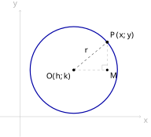
查看 TikZ 原始碼
\begin{document}
\begin{tikzpicture}[scale=1.5]
\coordinate (O) at (1.6,1.4);
\coordinate (P) at (2.596,2.236);
\coordinate (M) at (2.596,1.4);
\draw[gray!60,->] (-0.6,0) -- (3.6,0) node[below right] {$x$};
\draw[gray!60,->] (0,-0.6) -- (0,3.2) node[above left] {$y$};
\draw[blue!65!black,very thick] (O) circle (1.3);
\draw[dashed] (O) -- (P);
\draw[gray!70,dashed] (O) -- (M) -- (P);
\draw[gray!70] (2.446,1.4) -- (2.446,1.55) -- (2.596,1.55);
\fill (O) circle (1.2pt) node[below left] {$O(h,k)$};
\fill (P) circle (1.3pt) node[above right] {$P(x,y)$};
\fill (M) circle (1.1pt) node[below right] {$M$};
\node[above left] at (2.12,1.84) {$r$};
\end{tikzpicture}
\end{document}设以
方程
图 31-1：圆心在
的圆。 蓝色粗线是圆
， 是其上一点，虚线段 的长就是半径 。
是 到过 的水平线的垂足，直角方块标在 处； 、 ，三段构成直角三角形 。
设圆的圆心是
按 §30.1.2 的定义，
取
这正是 §30.1.2 算过的那一条。圆心在原点时方程没有一次项，这是它最好认的一种情形。
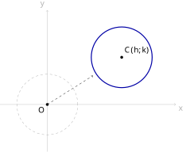
查看 TikZ 原始碼
\begin{document}
\begin{tikzpicture}[scale=1.5]
\coordinate (O) at (0,0);
\coordinate (C) at (2.2,1.4);
\draw[gray!60,->] (-1.4,0) -- (3.8,0) node[below right] {$x$};
\draw[gray!60,->] (0,-1.4) -- (0,2.8) node[above left] {$y$};
\draw[gray!70,dashed] (O) circle (0.9);
\draw[blue!65!black,very thick] (C) circle (0.9);
\draw[dashed,->] (O) -- (1.35,0.855);
\fill (O) circle (1.2pt) node[below left] {$O$};
\fill (C) circle (1.2pt) node[above right] {$C(h,k)$};
\end{tikzpicture}
\end{document}标准方程也可以看作平移的结果。按 §15.4.1，把图形上每一点
于是把圆心在原点的圆
图 31-2：把圆心在原点的圆平移到
。 灰虚线是
，蓝粗线是 ，两圆半径相同。 虚线箭头表示平移的方向与距离，由原点指向
。
平移这一读法给出一条不必重算的捷径：方程里
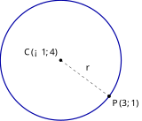
查看 TikZ 原始碼
\begin{document}
\begin{tikzpicture}[scale=1.5]
\coordinate (C) at (0,0);
\coordinate (P) at (1.28,-0.96);
\draw[blue!65!black,very thick] (C) circle (1.6);
\draw[dashed] (C) -- (P);
\fill (C) circle (1.2pt) node[above left] {$C(-1,4)$};
\fill (P) circle (1.3pt) node[below right] {$P(3,1)$};
\node[left] at (0.86,-0.22) {$r$};
\end{tikzpicture}
\end{document}求下列各圆的标准方程：
(a) 圆心为
(b) 圆心为
(a) 圆心
即圆的方程是
(b) 半径未给出，但圆心
即圆的方程是
图 31-3：示例 (b) 的圆。
圆心
、圆上一点 ，虚线段 的长就是半径 。
指出下列各圆的圆心与半径：
(a)
(b)
标准方程的形状是
(a) 与
(b) 同理
两式都已是标准方程，不必再配方。
31.1.2 圆的一般方程（The General Equation of a Circle）
把 §31.1.1 的标准方程展开，看看它究竟长什么形状。设圆心为
三个数
形如
的方程称为圆的一般方程（General Equation），其中
反过来问：任取三个实数
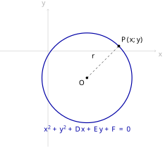
查看 TikZ 原始碼
\begin{document}
\begin{tikzpicture}[scale=1.5]
\coordinate (O) at (1.3,-0.9);
\coordinate (P) at (2.361,0.161);
\draw[gray!60,->] (-1.6,0) -- (3.6,0) node[below right] {$x$};
\draw[gray!60,->] (0,-3.2) -- (0,1.4) node[above left] {$y$};
\draw[blue!65!black,very thick] (O) circle (1.5);
\draw[dashed] (O) -- (P);
\fill (O) circle (1.2pt) node[below left] {$O$};
\fill (P) circle (1.3pt) node[above right] {$P(x,y)$};
\node[left] at (1.653,-0.193) {$r$};
\node[blue!65!black] at (1.3,-2.62) {$x^2+y^2+Dx+Ey+F=0$};
\end{tikzpicture}
\end{document}设
圆心与半径如图 31-4 所示。
图 31-4：一般方程的解集是一个圆。
蓝色粗线是解集
，圆心 的坐标是 ，虚线段 的长就是半径 。 图下方写出
所满足的方程。
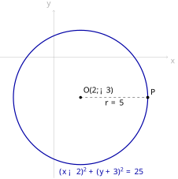
查看 TikZ 原始碼
\begin{document}
\begin{tikzpicture}[scale=1.5]
\coordinate (O) at (0.8,-1.2);
\coordinate (P) at (2.8,-1.2);
\draw[gray!60,->] (-1.6,0) -- (3.4,0) node[below right] {$x$};
\draw[gray!60,->] (0,-3.6) -- (0,1.4) node[above left] {$y$};
\draw[blue!65!black,very thick] (O) circle (2.0);
\draw[dashed] (O) -- (P);
\fill (O) circle (1.2pt) node[above right] {$O(2,-3)$};
\fill (P) circle (1.3pt) node[above right] {$P$};
\node[below] at (1.8,-1.2) {$r=5$};
\node[blue!65!black] at (1.4,-3.42) {$(x-2)^2+(y+3)^2=25$};
\end{tikzpicture}
\end{document}设
要判断解集是什么图形，就把方程配方成 §31.1.1 的标准方程，再看右端常数的正负。
最后一式与标准方程
由 §31.1.1 的定理（圆的标准方程），解集是以
此时
取
图 31-5：
、 、 时配方所得的圆。 圆心
即 ，半径 即 。 图下方写出配方后的标准方程。
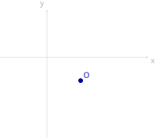
查看 TikZ 原始碼
\begin{document}
\begin{tikzpicture}[scale=1.5]
\coordinate (O) at (1.0,-0.7);
\draw[gray!60,->] (-1.4,0) -- (3.0,0) node[below right] {$x$};
\draw[gray!60,->] (0,-2.4) -- (0,1.4) node[above left] {$y$};
\fill[blue!65!black] (O) circle (2.0pt) node[above right] {$O$};
\end{tikzpicture}
\end{document}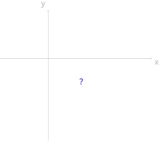
查看 TikZ 原始碼
\begin{document}
\begin{tikzpicture}[scale=1.5]
\draw[gray!60,->] (-1.4,0) -- (3.0,0) node[below right] {$x$};
\draw[gray!60,->] (0,-2.4) -- (0,1.4) node[above left] {$y$};
\node[blue!65!black] at (1.0,-0.7) {$\varnothing$};
\end{tikzpicture}
\end{document}设
图 31-6A：
时解集是一个点。 该点
的坐标是 。
若
图 31-6B：
时解集是空集。 坐标平面上画不出任何图形。
设
沿用上面证明里配方得到的等价式，解集由下式给出：
左端是两个平方之和，恒不为负。
若
判别量、圆心、半径这三个量都来自 §31.1.2 定理证明里的那个配方：把一般方程的左端配成
右端为正时，圆心与半径就直接从这条等式里读出来。把它整理成三步：
给定方程
- 算判别量：
- 读圆心：
- 读半径：
- 写出标准方程：
第 2、3 步是公式，第 4 步是回写。若不记得公式，也可以老老实实把
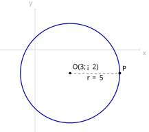
查看 TikZ 原始碼
\begin{document}
\begin{tikzpicture}[scale=1.5]
\coordinate (O) at (1.2,-0.8);
\coordinate (P) at (2.9,-0.8);
\draw[gray!60,->] (-1.2,0) -- (3.6,0) node[below right] {$x$};
\draw[gray!60,->] (0,-2.8) -- (0,1.4) node[above left] {$y$};
\draw[blue!65!black,very thick] (O) circle (1.7);
\draw[dashed] (O) -- (P);
\fill (O) circle (1.2pt) node[above right] {$O(3,-2)$};
\fill (P) circle (1.3pt) node[above right] {$P$};
\node[below] at (2.05,-0.8) {$r=5$};
\end{tikzpicture}
\end{document}求圆
这里
先算判别量：
故图形确是一个圆。圆心与半径为
即圆的标准方程是
用配方法验算一次，把
两条路的结果一致。圆心与半径如图 31-7 所示。
图 31-7：示例所得的圆。
圆心
，半径 ，虚线段 是一条半径。
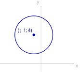
查看 TikZ 原始碼
\begin{document}
\begin{tikzpicture}[scale=1.5]
\coordinate (O) at (-0.35,1.4);
\draw[gray!60,->] (-2.0,0) -- (1.6,0) node[below right] {$x$};
\draw[gray!60,->] (0,-0.4) -- (0,2.8) node[above left] {$y$};
\draw[blue!65!black,very thick] (O) circle (0.926);
\fill[blue!65!black] (O) circle (1.8pt) node[above left] {$(-1,4)$};
\end{tikzpicture}
\end{document}判断下列各方程的解集是圆、一个点还是空集；是圆时求出圆心与半径。
(a)
(b)
(c)
三式的
(a)
解集是空集。
(b)
解集是单点集
(c)
解集是一个圆，圆心为
三式的
图 31-8：三式共用的圆心。
三个方程的圆心都是
； 时半径 （蓝粗线）， 时缩成圆心那一个点， 时无图形。
31.1.3 两种形式的互化与选用（Converting Between the Two Forms）
标准方程与一般方程说的是同一批点，只是写法不同：一个把圆心与半径摆在明面上，一个把系数摆平。两者之间的转换只有两个动作，展开与配方。
标准方程化为一般方程：展开两个完全平方，把常数项移到左端并合并。
于是
一般方程化为标准方程：把
右端这个数就是半径的平方，于是圆心是
系数不是
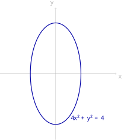
查看 TikZ 原始碼
\begin{document}
\begin{tikzpicture}[scale=1.5]
\draw[gray!60,->] (-2.2,0) -- (2.4,0) node[below right] {$x$};
\draw[gray!60,->] (0,-2.6) -- (0,2.6) node[above left] {$y$};
\draw[blue!65!black,very thick] plot[variable=\t, domain=0:360, samples=72, smooth] ({cos(\t)},{2*sin(\t)});
\node[blue!65!black] at (1.25,-1.75) {$4x^2+y^2=4$};
\end{tikzpicture}
\end{document}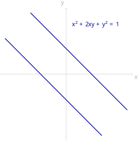
查看 TikZ 原始碼
\begin{document}
\begin{tikzpicture}[scale=1.5]
\draw[gray!60,->] (-2.6,0) -- (2.6,0) node[below right] {$x$};
\draw[gray!60,->] (0,-2.6) -- (0,2.6) node[above left] {$y$};
\draw[blue!65!black,very thick] (-1.4,2.4) -- (2.4,-1.4);
\draw[blue!65!black,very thick] (-2.4,1.4) -- (1.4,-2.4);
\node[blue!65!black] at (1.15,1.95) {$x^2+2xy+y^2=1$};
\end{tikzpicture}
\end{document}把圆的标准方程展开，得到的二元二次方程有三个特征：
先看
图 31-9：
的解集是一个椭圆。
方向的半轴长为 ， 方向的半轴长为 ，两个方向不等长，故不是圆。
再看含
图 31-10：
的解集是两条平行直线。 两条蓝粗线分别是
与 。
最后是判别量。
两种形式各有擅长的场合，选用不必犹豫，看题目要什么就换成什么。
| 已知条件或所求 | 宜用的形式 | 原因 |
|---|---|---|
| 圆心与半径 | 标准方程 | 三个参数 |
| 圆上三点 | 一般方程 | 三个未知数 |
| 判断一个方程是不是圆 | 一般方程 | 只需算判别量 |
| 点与圆的位置、交点、切线 | 标准方程 | 这些都要用到圆心与半径（§31.2） |
| 两圆方程相减 | 一般方程 | 相减时二次项刚好消去（§31.3.1） |
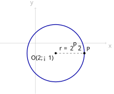
查看 TikZ 原始碼
\begin{document}
\begin{tikzpicture}[scale=1.5]
\coordinate (O) at (0.8,-0.4);
\coordinate (P) at (1.931,-0.4);
\draw[gray!60,->] (-1.4,0) -- (2.8,0) node[below right] {$x$};
\draw[gray!60,->] (0,-2.0) -- (0,1.4) node[above left] {$y$};
\draw[blue!65!black,very thick] (O) circle (1.131);
\draw[dashed] (O) -- (P);
\fill (O) circle (1.2pt) node[below left] {$O(2,-1)$};
\fill (P) circle (1.3pt) node[above right] {$P$};
\node[above] at (1.37,-0.4) {$r=2\sqrt{2}$};
\end{tikzpicture}
\end{document}(a) 把
(b) 把
(a) 展开两个完全平方，常数项移到左端：
即一般方程是
(b)
这里
故图形是一个圆，圆心与半径为
即标准方程是
图 31-11：示例 (b) 的圆。
圆心
，半径 ，虚线段 是一条半径。
把 (b) 的结果代回 (a) 的形式验算：把标准方程展开，
两边乘以
31.1.4 由条件确定圆的方程（Determining a Circle from Given Conditions）
一个圆由三个数决定：标准方程里的
第一条路线最直接：既然一般方程有三个未知数，就用三个条件列出三个方程。
三个条件为什么刚好够用：一般方程里真正待定的只有
已知圆上三点
- 设：设圆的一般方程为
- 代：把三点的坐标依次代入，得到关于
- 解：用消元法解这个方程组（§5.4.2 的加减消元法，逐个消去未知数）。
- 回写：把解出的
第 1 步设的是一般方程而不是标准方程，因为一般方程对
这条路线之所以行得通，是因为过三点的圆确实存在而且只有一个。这件事 §29.1.1 的定理（过三点的圆）已经证过了：只要三点不共线，两条垂直平分线交于唯一的一点，它就是圆心。本节的算法只是把那条定理换成坐标来算。
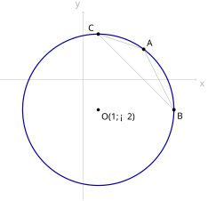
查看 TikZ 原始碼
\begin{document}
\begin{tikzpicture}[scale=1.5]
\coordinate (O) at (0.4,-0.8);
\coordinate (A) at (1.6,0.8);
\coordinate (B) at (2.4,-0.8);
\coordinate (C) at (0.4,1.2);
\draw[gray!60,->] (-2.2,0) -- (3.0,0) node[below right] {$x$};
\draw[gray!60,->] (0,-3.2) -- (0,1.8) node[above left] {$y$};
\draw[blue!65!black,very thick] (O) circle (2.0);
\draw[gray!70] (A) -- (B) -- (C) -- cycle;
\fill (O) circle (1.2pt) node[below right] {$O(1,-2)$};
\fill (A) circle (1.3pt) node[above right] {$A$};
\fill (B) circle (1.3pt) node[below right] {$B$};
\fill (C) circle (1.3pt) node[above left] {$C$};
\end{tikzpicture}
\end{document}求经过
设圆的一般方程为
把三点坐标依次代入：
整理成三元一次方程组：
第一式减第二式消去
即
即圆的方程是
化为标准方程读出圆心与半径：
三点与所求的圆如图 31-12 所示。
图 31-12：经过
、 、 三点的圆。 灰线连出三角形
，蓝粗线是所求的圆，圆心 、半径 。
第二条路线不走方程组，走几何。先想清楚圆心凭什么由「垂直平分线」定出来：所求的圆经过
由 §29.1.1 的引理（垂直平分线的等距性质），到
于是「求过三点的圆的方程」这一步一步落成四件事：写出两条垂直平分线的方程，求交点得圆心，再由圆心到任一点的距离得半径，最后回写标准方程。这条路线用的全是已有工具：中点公式（§15.2.3）、垂直线的斜率条件（§15.2.7）、点斜式（§20.3.3）与两直线的交点（§20.4.1）。
已知圆上三点
- 作垂直平分线：用中点公式（§15.2.3）求
- 再作一条：同法写出
- 求交点：解
- 求半径：
- 回写：即圆的方程是
取哪两条边的垂直平分线都可以，结果相同；若
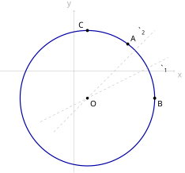
查看 TikZ 原始碼
\begin{document}
\begin{tikzpicture}[scale=1.5]
\coordinate (O) at (0.4,-0.8);
\coordinate (A) at (1.6,0.8);
\coordinate (B) at (2.4,-0.8);
\coordinate (C) at (0.4,1.2);
\draw[gray!60,->] (-2.2,0) -- (3.0,0) node[below right] {$x$};
\draw[gray!60,->] (0,-3.0) -- (0,1.8) node[above left] {$y$};
\draw[blue!65!black,very thick] (O) circle (2.0);
\draw[gray!70,dashed] (-1.0,-1.5) -- (2.8,0.4);
\draw[gray!70,dashed] (-0.6,-1.8) -- (2.4,1.2);
\fill (O) circle (1.2pt) node[below right] {$O$};
\fill (A) circle (1.3pt) node[above right] {$A$};
\fill (B) circle (1.3pt) node[below right] {$B$};
\fill (C) circle (1.3pt) node[above left] {$C$};
\node[below right] at (2.5,0.25) {$\ell_1$};
\node[above left] at (2.2,1.0) {$\ell_2$};
\end{tikzpicture}
\end{document}用几何法重做上例：求经过
先求
再求
解
两式相减得
半径为
即圆的方程是
图 31-13：几何法求圆心。
灰虚线
是 的垂直平分线， 是 的垂直平分线，两线交于圆心 。 蓝粗线是所求的圆，半径
。
两条路线的分工很清楚：待定系数法只有代入与解方程，步骤固定但运算量大；几何法每一步都在算一个几何量，式子短，但要认得出「圆心在垂直平分线上」这一步。三点里若有两点连线水平或铅垂，几何法通常更快。
第三类条件把切线拉进来：圆心已知，又知道圆与某条直线相切，那么半径就是圆心到这条直线的距离。依据是 §29.2.1 的定理（直线与圆的位置关系）：圆心到直线的距离
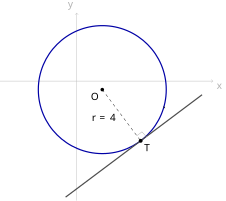
查看 TikZ 原始碼
\begin{document}
\begin{tikzpicture}[scale=1.5]
\coordinate (O) at (0.6,-0.2);
\coordinate (T) at (1.5,-1.4);
\draw[gray!60,->] (-1.8,0) -- (3.2,0) node[below right] {$x$};
\draw[gray!60,->] (0,-2.8) -- (0,1.6) node[above left] {$y$};
\draw[blue!65!black,very thick] (O) circle (1.5);
\draw[black!70,very thick] (-0.26,-2.72) -- (2.94,-0.32);
\draw[dashed] (O) -- (T);
\draw[gray!70] (1.41,-1.28) -- (1.53,-1.19) -- (1.64,-1.31);
\fill (O) circle (1.2pt) node[below left] {$O$};
\fill (T) circle (1.3pt) node[below right] {$T$};
\node[left] at (0.98,-0.86) {$r=4$};
\node[above left] at (2.2,-0.86) {$\ell$};
\end{tikzpicture}
\end{document}(a) 求以
(b) 求圆心在
(a) 圆心
即圆的方程是
图 31-14：示例 (a) 的圆与它的切线。
蓝粗线是圆，圆心为
；黑粗线是切线 ， 是切点。 虚线段
是半径，直角方块标在 处，表示 。
(b) 圆心在
即
两个圆心都合格，故所求的圆有两个，即圆的方程是
绝对值给出两支，这是「圆心未定、只给半径与切线」一类题目的常态：满足条件的圆往往不止一个。
最后一类条件只给直径的两个端点。下面这条公式超出常规课程的要求，作扩展阅读：它跳过圆心与半径，直接由两个端点写出方程。
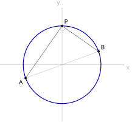
查看 TikZ 原始碼
\begin{document}
\begin{tikzpicture}[scale=1.5]
\coordinate (A) at (-1.410,-0.513);
\coordinate (B) at (1.410,0.513);
\coordinate (P) at (0,1.5);
\draw[gray!60,->] (-2.4,0) -- (2.4,0) node[below right] {$x$};
\draw[gray!60,->] (0,-2.2) -- (0,2.2) node[above left] {$y$};
\draw[blue!65!black,very thick] (0,0) circle (1.5);
\draw[gray!70] (A) -- (B);
\draw (P) -- (A) (P) -- (B);
\draw[gray!70] (-0.086,1.377) -- (0.037,1.291) -- (0.123,1.414);
\fill (A) circle (1.3pt) node[below left] {$A$};
\fill (B) circle (1.3pt) node[above right] {$B$};
\fill (P) circle (1.3pt) node[above right] {$P$};
\end{tikzpicture}
\end{document}设
圆、直径的两个端点与圆上一点
图 31-15：以
为直径的圆。 蓝粗线是圆
，灰线段 是它的直径，两个端点为 、 ， 是圆上一点。 直角方块标在
处，即 。
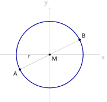
查看 TikZ 原始碼
\begin{document}
\begin{tikzpicture}[scale=1.5]
\coordinate (M) at (0,0);
\coordinate (A) at (-1.2,-0.6);
\coordinate (B) at (1.2,0.6);
\draw[gray!60,->] (-2.0,0) -- (2.0,0) node[below right] {$x$};
\draw[gray!60,->] (0,-1.9) -- (0,1.9) node[above left] {$y$};
\draw[blue!65!black,very thick] (M) circle (1.3416);
\draw[gray!70] (A) -- (B);
\draw[gray!70,dashed] (M) -- (A);
\fill (M) circle (1.2pt) node[below right] {$M$};
\fill (A) circle (1.3pt) node[below left] {$A$};
\fill (B) circle (1.3pt) node[above right] {$B$};
\node[above left] at (-0.68,-0.22) {$r$};
\end{tikzpicture}
\end{document}设
要证的是
第一步：写出圆的标准方程。 圆心是直径
半径是直径的一半，由两点距离公式（§15.2.2）得
于是圆的标准方程是
图 31-16：以
为直径的圆，圆心是 的中点。 蓝粗线是圆，灰线段
是直径， 是中点，灰虚线段 是半径 。
第二步：把标准方程展开，看它与要证的式子有什么关系。 目的是把
其中用到了
故常数项等于
第三步：把等价关系串起来。
把
按 §31.1.2 的算法读出圆心，正是
判别量为
故半径
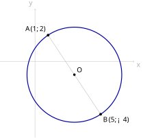
查看 TikZ 原始碼
\begin{document}
\begin{tikzpicture}[scale=1.5]
\coordinate (O) at (1.35,-0.45);
\coordinate (A) at (0.45,0.9);
\coordinate (B) at (2.25,-1.8);
\draw[gray!60,->] (-1.2,0) -- (3.4,0) node[below right] {$x$};
\draw[gray!60,->] (0,-2.6) -- (0,1.8) node[above left] {$y$};
\draw[blue!65!black,very thick] (O) circle (1.623);
\draw[gray!70] (A) -- (B);
\fill (O) circle (1.2pt) node[above right] {$O$};
\fill (A) circle (1.3pt) node[above left] {$A(1,2)$};
\fill (B) circle (1.3pt) node[below right] {$B(5,-4)$};
\end{tikzpicture}
\end{document}求以
代入直径式
即圆的方程是
这里
用中点公式与距离公式验算：
图 31-17：示例所得的圆。
灰线段
是直径，它的中点就是圆心 ，半径 。
至此四类条件都处理完了。前三条路线各有一个「缺什么就补什么」的入口：缺半径就用距离公式或点到直线的距离去算，缺圆心就用垂直平分线去交，缺方程就设一般方程代入条件。第四条路线则把三步合成一步。
31.2 直线与圆（Straight Lines and Circles）
本节难度上限：T B- ｜ C B ｜ E B- ｜ Q B
§29.2.1 已经用综合几何把圆与直线的位置关系证完了：切线与割线的定义、点在圆内圆上圆外的分类、圆心到直线的距离
与半径 的大小决定公共点的个数、切线垂直于过切点的半径、由圆外一点可以引两条等长的切线。本节不重证任何一条，只做一件事：把这些结论翻译成可以代入坐标的判据与算法。翻译的工具都是旧的，两点间的距离公式（§15.2.2）、点到直线的距离（§20.5.1）、联立方程的代入消元（§18.3.2）与一元二次方程的判别式（§18.2.1）。
31.2.1 点与圆的位置关系（Position of a Point Relative to a Circle）
§29.2.1 的定义（点在圆内、圆上、圆外）用的判据是距离：
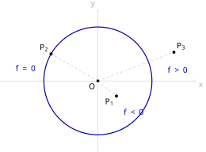
查看 TikZ 原始碼
\begin{document}
\begin{tikzpicture}[scale=1.5]
\coordinate (O) at (0,0);
\coordinate (P1) at (0.55,-0.45);
\coordinate (P2) at (-1.386,0.8);
\coordinate (P3) at (2.25,0.85);
\draw[gray!60,->] (-2.9,0) -- (2.9,0) node[below right] {$x$};
\draw[gray!60,->] (0,-2.1) -- (0,2.1) node[above left] {$y$};
\draw[blue!65!black,very thick] (O) circle (1.6);
\draw[gray!70,dashed] (O) -- (P1) (O) -- (P2) (O) -- (P3);
\fill (O) circle (1.2pt) node[below left] {$O$};
\fill (P1) circle (1.3pt) node[below left] {$P_1$};
\fill (P2) circle (1.3pt) node[above left] {$P_2$};
\fill (P3) circle (1.3pt) node[above right] {$P_3$};
\node[blue!65!black] at (1.05,-0.95) {$f<0$};
\node[blue!65!black] at (-2.15,0.35) {$f=0$};
\node[blue!65!black] at (2.35,0.3) {$f>0$};
\end{tikzpicture}
\end{document}设圆的方程是
又设
三点
图 31-18：符号判据的三种情形。
蓝粗线是圆
，三段灰虚线是 、 、 。
在圆内， ； 在圆上， ； 在圆外， 。
设圆的方程是
由两点间的距离公式（§15.2.2），
目的是把
按 §29.2.1 的定义（点在圆内、圆上、圆外），
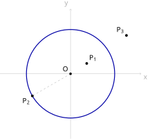
查看 TikZ 原始碼
\begin{document}
\begin{tikzpicture}[scale=1.5]
\coordinate (O) at (0,0);
\coordinate (P1) at (0.55,0.35);
\coordinate (P2) at (-1.299,-0.75);
\coordinate (P3) at (1.9,1.3);
\draw[gray!60,->] (-2.4,0) -- (2.4,0) node[below right] {$x$};
\draw[gray!60,->] (0,-2.2) -- (0,2.2) node[above left] {$y$};
\draw[blue!65!black,very thick] (O) circle (1.5);
\draw[gray!70,dashed] (O) -- (P2);
\fill (P1) circle (1.3pt) node[above right] {$P_1$};
\fill (P2) circle (1.3pt) node[below left] {$P_2$};
\fill (P3) circle (1.3pt) node[above left] {$P_3$};
\fill (O) circle (1.2pt) node[above left] {$O$};
\end{tikzpicture}
\end{document}设
设
点
图 31-19：一般方程的左端在三种位置上的符号。
蓝粗线是圆
，圆心 、半径 ； 在圆内（ ）， 在圆上（ ）， 在圆外（ ），灰虚线段 是半径。
设
按 §31.1.2 的配方，
而
两个函数相同，代入同一点所得的数也相同，定理的三行判据逐行搬到
于是判位置不必先求圆心与半径：把坐标代进方程左端，看符号就行。例如把
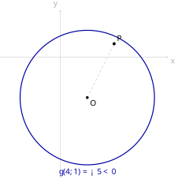
查看 TikZ 原始碼
\begin{document}
\begin{tikzpicture}[scale=1.5]
\coordinate (O) at (0.8,-1.2);
\coordinate (P) at (1.6,0.4);
\draw[gray!60,->] (-1.8,0) -- (3.2,0) node[below right] {$x$};
\draw[gray!60,->] (0,-3.6) -- (0,1.4) node[above left] {$y$};
\draw[blue!65!black,very thick] (O) circle (2.0);
\draw[gray!70,dashed] (O) -- (P);
\fill (O) circle (1.2pt) node[below right] {$O$};
\fill (P) circle (1.3pt) node[above right] {$P$};
\node[blue!65!black] at (0.8,-3.42) {$g(4,1)=-5<0$};
\end{tikzpicture}
\end{document}图 31-20：把点的坐标代入一般方程的左端。
蓝粗线是圆
，圆心 、半径 ； 在圆内，虚线段 的长小于半径。
把上面的定理与它的推论合起来，判位置这件事就成了一套固定动作：
已知圆的方程与一点
- 化成一般方程：把圆的方程写成
- 代入左端：算
- 看符号：
这三步合起来就是上面的定理与它的推论：定理给的是标准方程下的
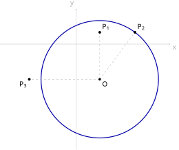
查看 TikZ 原始碼
\begin{document}
\begin{tikzpicture}[scale=1.5]
\coordinate (O) at (0.8,-1.2);
\coordinate (P1) at (0.8,0.4);
\coordinate (P2) at (2.0,0.4);
\coordinate (P3) at (-1.6,-1.2);
\draw[gray!60,->] (-2.6,0) -- (3.2,0) node[below right] {$x$};
\draw[gray!60,->] (0,-3.6) -- (0,1.2) node[above left] {$y$};
\draw[blue!65!black,very thick] (O) circle (2.0);
\draw[gray!70,dashed] (O) -- (P1) (O) -- (P2) (O) -- (P3);
\fill (O) circle (1.2pt) node[below right] {$O$};
\fill (P1) circle (1.3pt) node[above right] {$P_1$};
\fill (P2) circle (1.3pt) node[above right] {$P_2$};
\fill (P3) circle (1.3pt) node[below left] {$P_3$};
\end{tikzpicture}
\end{document}判断
用符号判据。 这里
故
用距离判据核对一次。 先求出圆心与半径：
两套判据的结论一致。符号判据不必先求圆心与半径，运算更短；距离判据给出的是具体的数，需要比较远近时更有用。三点与圆如图 31-21 所示。
图 31-21：示例的三点与圆。
圆心
、半径 ； 在圆内， 在圆上， 在圆外。
31.2.2 直线与圆的交点（Intersections of a Line and a Circle）
直线与圆有几个公共点，§29.2.1 的定理（直线与圆的位置关系）已经答完了：算圆心到直线的距离
这一节要回答它没有回答的两件事：公共点的坐标是多少；不先算任何几何量、只把两个方程摆在一起，能不能判断公共点的个数。
分析。 公共点是同时满足两个方程的点，所以求交点就是解方程组。圆取标准方程
代入消元（§18.3.2）把
这一步的关键在于：消元既没有丢掉公共点，也没有增加公共点。
- 不铅垂时，直线上一点由它的横坐标唯一决定，
铅垂时由纵坐标唯一决定。
于是公共点的个数与这个一元二次方程的实根个数相同，而实根个数由判别式
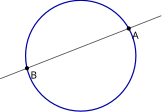
查看 TikZ 原始碼
\begin{document}
\begin{tikzpicture}[scale=1.5]
\coordinate (A) at (1.132,0.640);
\coordinate (B) at (-1.267,-0.293);
\draw[blue!65!black,very thick] (0,0) circle (1.3);
\draw[black!70,thick] (-1.9,-0.54) -- (1.9,0.94);
\fill (A) circle (1.4pt) node[below right] {$A$};
\fill (B) circle (1.4pt) node[below right] {$B$};
\end{tikzpicture}
\end{document}图 31-22A：
，两个公共点。 蓝粗线是圆，黑线是直线
， 、 是两个公共点，线段 是 截出的弦。
再看相切：直线与圆只有一个公共点，如图 31-22B 所示。
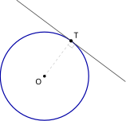
查看 TikZ 原始碼
\begin{document}
\begin{tikzpicture}[scale=1.5]
\coordinate (T) at (0.78,1.04);
\draw[blue!65!black,very thick] (0,0) circle (1.3);
\draw[black!70,thick] (-0.82,2.24) -- (2.38,-0.16);
\draw[gray!70,dashed] (0,0) -- (T);
\fill (0,0) circle (1.2pt) node[below left] {$O$};
\draw[gray!70] (0.69,0.92) -- (0.81,0.83) -- (0.90,0.95);
\fill (T) circle (1.4pt) node[above right] {$T$};
\end{tikzpicture}
\end{document}图 31-22B：
，恰有一个公共点。
是切点，灰虚线段 是半径，直角方块标在 处。
最后是相离：直线与圆没有公共点，如图 31-22C 所示。
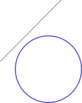
查看 TikZ 原始碼
\begin{document}
\begin{tikzpicture}[scale=1.5]
\draw[blue!65!black,very thick] (0,0) circle (1.3);
\draw[black!70,thick] (-1.9,0.3) -- (0.5,2.7);
\end{tikzpicture}
\end{document}图 31-22C：
，没有公共点。 直线整条落在圆外。
于是不用先求圆心与半径，只看
已知圆
- 解出一个变量：
- 代入消元：把
- 算判别式：
- 回代：把每个根代回第 1 步的关系式，求出另一个坐标。
- 写出公共点，并回答题目的提问（相交时是弦的两个端点，相切时是切点）。
第 2 步整理出的二次项系数
同一条直线与同一个圆，现在有两套判据：§29.2.1 的
只问位置关系时，用
要交点坐标时，用判别式法：反正要消元、要解一元二次方程，
两者不一致时一定是算错了，可以用一套核对另一套。
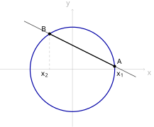
查看 TikZ 原始碼
\begin{document}
\begin{tikzpicture}[scale=1.5]
\coordinate (A) at (1.3963,0.1019);
\coordinate (B) at (-0.7563,1.1782);
\draw[gray!60,->] (-2.4,0) -- (2.4,0) node[below right] {$x$};
\draw[gray!60,->] (0,-1.9) -- (0,2.0) node[above left] {$y$};
\draw[blue!65!black,very thick] (0,0) circle (1.4);
\draw[black!70,thick] (-1.6,1.6) -- (2.1,-0.25);
\draw[gray!70,dashed] (A) -- (1.3963,0) (B) -- (-0.7563,0);
\draw[very thick] (A) -- (B);
\fill (A) circle (1.4pt) node[above right] {$A$};
\fill (B) circle (1.4pt) node[above left] {$B$};
\node at (1.58,-0.18) {$x_1$};
\node at (-0.92,-0.18) {$x_2$};
\end{tikzpicture}
\end{document}设直线
直线与圆交于
图 31-23：用两根之差求弦长。
蓝粗线是圆，黑线是直线
，它与圆交于 、 ，粗黑线段 是要求的弦。 两段灰虚线把
、 投到 轴上，两个垂足的横坐标 、 就是消元后一元二次方程的两个根。
设直线
要算的是
再由两点距离公式（§15.2.2），两个纵坐标之差是
这与 §21.8.2 抛物线弦长的公式同型；两条路的分工见上面的注记（两种判据怎么分工）。
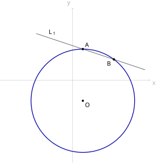
查看 TikZ 原始碼
\begin{document}
\begin{tikzpicture}[scale=1.5]
\coordinate (O) at (0.4,-0.8);
\draw[gray!60,->] (-2.8,0) -- (3.0,0) node[below right] {$x$};
\draw[gray!60,->] (0,-3.2) -- (0,2.8) node[above left] {$y$};
\draw[blue!65!black,very thick] (O) circle (2.0);
\fill (O) circle (1.2pt) node[below right] {$O$};
\draw[black!70,thick] (-1.4,1.8) -- (2.8,0.4);
\coordinate (A) at (0.4,1.2);
\coordinate (B) at (1.6,0.8);
\fill (A) circle (1.3pt) node[above right] {$A$};
\fill (B) circle (1.3pt) node[below left] {$B$};
\node[above right] at (-1.0,1.667) {$L_1$};
\end{tikzpicture}
\end{document}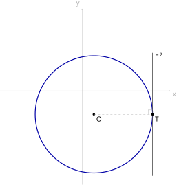
查看 TikZ 原始碼
\begin{document}
\begin{tikzpicture}[scale=1.5]
\coordinate (O) at (0.4,-0.8);
\draw[gray!60,->] (-2.8,0) -- (3.0,0) node[below right] {$x$};
\draw[gray!60,->] (0,-3.2) -- (0,2.8) node[above left] {$y$};
\draw[blue!65!black,very thick] (O) circle (2.0);
\fill (O) circle (1.2pt) node[below right] {$O$};
\draw[black!70,thick] (2.4,-2.9) -- (2.4,1.3);
\coordinate (T) at (2.4,-0.8);
\draw[gray!70,dashed] (O) -- (T);
\draw[gray!70] (2.25,-0.8) -- (2.25,-0.65) -- (2.4,-0.65);
\fill (T) circle (1.3pt) node[below right] {$T$};
\node[above right] at (2.4,1.1) {$L_2$};
\end{tikzpicture}
\end{document}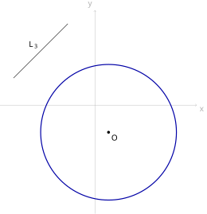
查看 TikZ 原始碼
\begin{document}
\begin{tikzpicture}[scale=1.5]
\coordinate (O) at (0.4,-0.8);
\draw[gray!60,->] (-2.8,0) -- (3.0,0) node[below right] {$x$};
\draw[gray!60,->] (0,-3.2) -- (0,2.8) node[above left] {$y$};
\draw[blue!65!black,very thick] (O) circle (2.0);
\fill (O) circle (1.2pt) node[below right] {$O$};
\draw[black!70,thick] (-2.4,0.8) -- (-0.8,2.4);
\node[above left] at (-1.6,1.6) {$L_3$};
\end{tikzpicture}
\end{document}已知圆
(a)
(b)
(c)
先把
(a)
判别式
回代
图 31-24A：
与圆相交。 蓝粗线是圆，圆心
、半径 ；黑线是 ，它与圆交于 、 。
(b)
判别式
图 31-24B：
与圆相切。 黑线是铅垂线
，它与圆恰有一个公共点 ，即切点；灰虚线段 是半径，直角方块标在 处。
(c)
判别式
图 31-24C：
与圆相离。 黑线是
，它整条落在圆外，与圆没有公共点。
用几何判据核对一次，算
依次是
求上例的直线
用弦长公式。 圆心
代入
用两个交点核对。 上例已求出
两法一致。第一种只用到
31.2.3 圆的切线方程（Equations of Tangents to a Circle）
切线的几何性质 §29.2.1 已经证完：与圆恰有一个公共点的直线叫切线，该公共点叫切点；切线垂直于过切点的半径；反过来，过半径外端且垂直于该半径的直线是切线；由圆外一点可以引两条切线，它们等长。本节要算的是切线的方程。
所有切线问题都归结为同一句话：这条直线与圆恰有一个公共点。这句话有两种翻译，
第一类：切点已知。 先不急着给公式，用两条已有结论把它推出来：切线垂直于过切点的半径（§29.2.1），而两条垂直线的斜率之积为
设圆的方程是
半径不水平也不铅垂（
两边同乘
再把
最后一步用了
半径水平或铅垂（
两种情形合起来，就是下面这条定理。
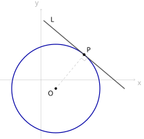
查看 TikZ 原始碼
\begin{document}
\begin{tikzpicture}[scale=1.5]
\coordinate (O) at (0.5,-0.3);
\coordinate (P) at (1.464,0.849);
\draw[gray!60,->] (-1.4,0) -- (3.2,0) node[below right] {$x$};
\draw[gray!60,->] (0,-2.0) -- (0,2.4) node[above left] {$y$};
\draw[blue!65!black,very thick] (O) circle (1.5);
\draw[black!70,very thick] (0.085,2.006) -- (2.843,-0.308);
\draw[gray!70,dashed] (O) -- (P);
\draw[gray!70] (1.368,0.734) -- (1.482,0.638) -- (1.579,0.753);
\fill (O) circle (1.2pt) node[below left] {$O$};
\fill (P) circle (1.3pt) node[above right] {$P$};
\node[above right] at (0.238,1.878) {$L$};
\end{tikzpicture}
\end{document}设圆
圆、切点
图 31-25：过圆上一点
的切线。 蓝粗线是圆
，黑粗线是切线 ， 是切点，灰虚线段 是半径，直角方块标在 处。
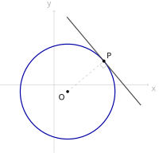
查看 TikZ 原始碼
\begin{document}
\begin{tikzpicture}[scale=1.5]
\coordinate (O) at (0.4,-0.2);
\coordinate (P) at (1.472,0.7);
\draw[gray!60,->] (-1.6,0) -- (2.8,0) node[below right] {$x$};
\draw[gray!60,->] (0,-2.0) -- (0,2.2) node[above left] {$y$};
\draw[blue!65!black,very thick] (O) circle (1.4);
\draw[black!70,very thick] (0.379,2.002) -- (2.565,-0.602);
\draw[gray!70,dashed] (O) -- (P);
\draw[gray!70] (1.357,0.604) -- (1.454,0.489) -- (1.569,0.585);
\fill (O) circle (1.2pt) node[below left] {$O$};
\fill (P) circle (1.3pt) node[above right] {$P$};
\end{tikzpicture}
\end{document}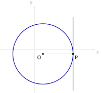
查看 TikZ 原始碼
\begin{document}
\begin{tikzpicture}[scale=1.5]
\coordinate (O) at (0.4,-0.2);
\coordinate (P) at (1.8,-0.2);
\draw[gray!60,->] (-1.6,0) -- (2.8,0) node[below right] {$x$};
\draw[gray!60,->] (0,-2.0) -- (0,2.0) node[above left] {$y$};
\draw[blue!65!black,very thick] (O) circle (1.4);
\draw[black!70,very thick] (1.8,-1.9) -- (1.8,1.5);
\draw[gray!70,dashed] (O) -- (P);
\draw[gray!70] (1.65,-0.2) -- (1.65,-0.05) -- (1.8,-0.05);
\fill (O) circle (1.2pt) node[below left] {$O$};
\fill (P) circle (1.3pt) node[below right] {$P$};
\end{tikzpicture}
\end{document}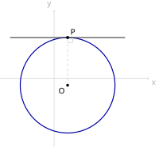
查看 TikZ 原始碼
\begin{document}
\begin{tikzpicture}[scale=1.5]
\coordinate (O) at (0.4,-0.2);
\coordinate (P) at (0.4,1.2);
\draw[gray!60,->] (-1.6,0) -- (2.8,0) node[below right] {$x$};
\draw[gray!60,->] (0,-2.0) -- (0,2.0) node[above left] {$y$};
\draw[blue!65!black,very thick] (O) circle (1.4);
\draw[black!70,very thick] (-1.3,1.2) -- (2.1,1.2);
\draw[gray!70,dashed] (O) -- (P);
\draw[gray!70] (0.4,1.05) -- (0.55,1.05) -- (0.55,1.2);
\fill (O) circle (1.2pt) node[below left] {$O$};
\fill (P) circle (1.3pt) node[above right] {$P$};
\end{tikzpicture}
\end{document}设圆
由 §29.2.1 的推论（切线的判定），过
情形一：
图 31-26A：情形一，半径
既不水平也不铅垂。 切线斜率存在，可用点斜式写出。
切线垂直于
切线过
目的是把
情形二：
图 31-26B：情形二，半径
水平。 切线是铅垂线
，斜率不存在，点斜式用不上。
由
切线与水平的
把
公式给出的正是
情形三：
图 31-26C：情形三，半径
铅垂。 切线是水平线
。
由
切线与铅垂的
把
三种情形给出同一条公式，故过
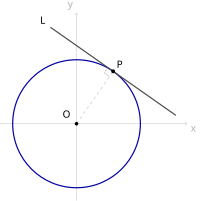
查看 TikZ 原始碼
\begin{document}
\begin{tikzpicture}[scale=1.5]
\coordinate (O) at (0,0);
\coordinate (P) at (0.860,1.229);
\draw[gray!60,->] (-1.8,0) -- (2.6,0) node[below right] {$x$};
\draw[gray!60,->] (0,-1.8) -- (0,2.6) node[above left] {$y$};
\draw[blue!65!black,very thick] (O) circle (1.5);
\draw[black!70,very thick] (-0.614,2.262) -- (2.334,0.196);
\draw[gray!70,dashed] (O) -- (P);
\draw[gray!70] (0.774,1.106) -- (0.651,1.192) -- (0.737,1.315);
\fill (O) circle (1.2pt);
\node[above left] at (-0.06,0.06) {$O$};
\fill (P) circle (1.3pt) node[above right] {$P$};
\node[above left] at (-0.614,2.262) {$L$};
\end{tikzpicture}
\end{document}设
圆、切点与切线如图 31-27 所示。
图 31-27：圆心在原点时的切线。
蓝粗线是圆
，圆心即原点 ；黑粗线是切线 ， 是切点，灰虚线段 是半径。
设
圆心是原点，故
把圆的方程与切线的方程并排写：
差别只有一处：每个平方项分一半给切点，
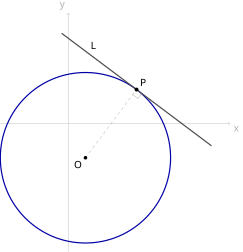
查看 TikZ 原始碼
\begin{document}
\begin{tikzpicture}[scale=1.5]
\coordinate (O) at (0.4,-0.8);
\coordinate (P) at (1.6,0.8);
\draw[gray!60,->] (-1.6,0) -- (3.8,0) node[below right] {$x$};
\draw[gray!60,->] (0,-3.0) -- (0,2.6) node[above left] {$y$};
\draw[blue!65!black,very thick] (O) circle (2.0);
\draw[black!70,very thick] (-0.16,2.12) -- (3.36,-0.52);
\draw[gray!70,dashed] (O) -- (P);
\draw[gray!70] (1.51,0.68) -- (1.63,0.59) -- (1.72,0.71);
\fill (O) circle (1.2pt) node[below left] {$O$};
\fill (P) circle (1.3pt) node[above right] {$P$};
\node[above right] at (0.44,1.67) {$L$};
\end{tikzpicture}
\end{document}(a) 求圆
(b) 求圆
(a) 先确认
配方或套公式得圆心
即切线方程是
用
(b) 圆心是原点，用推论的公式，
即切线方程是
图 31-28：示例 (a) 的圆与切线。
蓝粗线是
，圆心 、半径 ；黑粗线是切线 ，切点 ，灰虚线段 是半径。
第二类：只知圆外一点。 §29.2.1 的定理（外点的两条切线）说这样的切线有两条、等长，且该点与圆心的连线平分两条切线的夹角，但没有给出方程。求方程要靠设斜率。
分析。 求切线方程，就是求一条过
把「与圆恰有一个公共点」翻译成方程，有两条路：把直线代进圆的方程后令判别式为零（§31.2.2 的分析），或者令圆心到直线的距离等于半径（§20.5.1）。两条路都得到关于
设斜率是有代价的：它把铅垂的那条切线排除在外。若过
已知圆
- 确认位置：把
- 设斜率：设切线斜率为
- 用「恰有一个公共点」列方程，两条路任取其一：几何法是令圆心到直线的距离等于半径（§20.5.1），
- 解出
- 检查铅垂切线：第 2 步设了斜率，就排除了铅垂线。若第 4 步只解出一个
- 回写：即切线方程是（两条）。
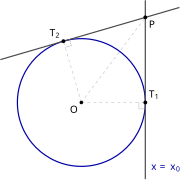
查看 TikZ 原始碼
\begin{document}
\begin{tikzpicture}[scale=1.5]
\coordinate (O) at (0,0);
\coordinate (P) at (1.5,2.0);
\coordinate (T1) at (1.5,0);
\coordinate (T2) at (-0.420,1.440);
\draw[blue!65!black,very thick] (O) circle (1.5);
\draw[black!70,very thick] (1.5,-1.8) -- (1.5,2.4);
\draw[black!70,very thick] (-1.9,1.008) -- (2.3,2.233);
\draw[gray!70,dashed] (O) -- (T1) (O) -- (T2) (O) -- (P);
\draw[gray!70] (1.35,0) -- (1.35,-0.15) -- (1.5,-0.15);
\draw[gray!70] (-0.378,1.296) -- (-0.234,1.338) -- (-0.276,1.482);
\fill (O) circle (1.2pt) node[below left] {$O$};
\fill (P) circle (1.3pt) node[below right] {$P$};
\fill (T1) circle (1.3pt) node[above right] {$T_1$};
\fill (T2) circle (1.3pt) node[above left] {$T_2$};
\node[blue!65!black] at (1.98,-1.55) {$x=x_0$};
\end{tikzpicture}
\end{document}第 2 步「设斜率为
判断有没有这种情形不必猜：
图 31-29：两条切线中有一条是铅垂线。
的横坐标与切点 相同， 就是铅垂切线 ，此时 。 另一条切线
斜率存在，设斜率的方法只算得出它一条。 两处直角方块分别标在
、 。
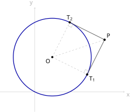
查看 TikZ 原始碼
\begin{document}
\begin{tikzpicture}[scale=1.5]
\coordinate (O) at (0.7,1.4);
\coordinate (P) at (2.8,2.1);
\coordinate (T1) at (2.1,0.7);
\coordinate (T2) at (1.4,2.8);
\draw[gray!60,->] (-1.4,0) -- (3.6,0) node[below right] {$x$};
\draw[gray!60,->] (0,-0.8) -- (0,3.4) node[above left] {$y$};
\draw[blue!65!black,very thick] (O) circle (1.565);
\draw[black!70,thick] (P) -- (T1);
\draw[black!70,thick] (P) -- (T2);
\draw[gray!70,dashed] (O) -- (T1) (O) -- (T2) (O) -- (P);
\draw[gray!70] (2.167,0.834) -- (2.033,0.901) -- (1.966,0.767);
\draw[gray!70] (1.534,2.733) -- (1.467,2.599) -- (1.333,2.666);
\fill (O) circle (1.2pt) node[below left] {$O$};
\fill (P) circle (1.3pt) node[above right] {$P$};
\fill (T1) circle (1.3pt) node[below right] {$T_1$};
\fill (T2) circle (1.3pt) node[above] {$T_2$};
\end{tikzpicture}
\end{document}求过点
先确认
圆心
用几何法。 圆心到切线的距离等于半径：
左端分子化简为
故
用判别式法核对。 把
令
回写两条切线：
即切线方程是
图 31-30：过外点
的两条切线。 蓝粗线是
，圆心 、半径 ；两条黑线段是切线 与 ，切点为 、 ；三段灰虚线是两条半径与 ，直角方块标在两个切点处。
第三类：只知斜率。 设
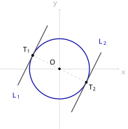
查看 TikZ 原始碼
\begin{document}
\begin{tikzpicture}[scale=1.5]
\coordinate (O) at (0,0);
\coordinate (T1) at (-0.9,0.45);
\coordinate (T2) at (0.9,-0.45);
\draw[gray!60,->] (-2.0,0) -- (2.0,0) node[below right] {$x$};
\draw[gray!60,->] (0,-2.0) -- (0,2.0) node[above left] {$y$};
\draw[blue!65!black,very thick] (O) circle (1.006);
\draw[black!70,very thick] (-1.4,-0.55) -- (-0.4,1.45);
\draw[black!70,very thick] (0.4,-1.45) -- (1.4,0.55);
\draw[gray!70,dashed] (O) -- (T1) (O) -- (T2);
\fill (O) circle (1.2pt);
\node[above left] at (-0.06,0.06) {$O$};
\fill (T1) circle (1.3pt) node[above left] {$T_1$};
\fill (T2) circle (1.3pt) node[below right] {$T_2$};
\node[blue!65!black] at (-1.45,-0.9) {$L_1$};
\node[blue!65!black] at (1.45,0.9) {$L_2$};
\end{tikzpicture}
\end{document}求与圆
设切线为
判别式法。 代入
相切即恰有一个公共点，故
令
几何法。 圆心是原点、
两条路给出同一个
两个切点可由
图 31-31：斜率为
的两条切线。 蓝粗线是圆
，圆心为原点 ；两条黑粗线是 与 ，切点分别是 、 ，灰虚线段是两条半径。
最后一件与切线有关的量是切线的长度。§29.2.3 已经给出
顺带记下切线长：由 §29.2.1 的定理（切线垂直于过切点的半径）与毕氏定理（§8.5），直角三角形
两边取算术平方根就是切线长。它与 §31.2.1 的位置判据同源：
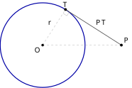
查看 TikZ 原始碼
\begin{document}
\begin{tikzpicture}[scale=1.5]
\coordinate (O) at (0,0);
\coordinate (P) at (2.6,0);
\coordinate (T) at (0.754,1.179);
\draw[blue!65!black,very thick] (O) circle (1.4);
\draw[black!70,thick] (P) -- (T);
\draw[gray!70,dashed] (O) -- (T) (O) -- (P);
\draw[gray!70] (0.673,1.053) -- (0.7996,0.972) -- (0.880,1.099);
\fill (O) circle (1.2pt) node[below left] {$O$};
\fill (P) circle (1.3pt) node[above right] {$P$};
\fill (T) circle (1.3pt) node[above] {$T$};
\node[above left] at (0.377,0.590) {$r$};
\node[above right] at (1.677,0.590) {$PT$};
\end{tikzpicture}
\end{document}图 31-32：切线长。
蓝粗线是圆，圆心
、半径 ； 是圆外一点，黑线段 是一条切线， 是切点，直角方块标在 处；灰虚线段 连接外点与圆心。
把
右端正是切线长的平方。于是「把点的坐标代入方程左端」这一个动作同时给出三件事：
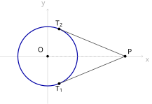
查看 TikZ 原始碼
\begin{document}
\begin{tikzpicture}[scale=1.5]
\coordinate (O) at (0,0);
\coordinate (P) at (2.6,0);
\coordinate (T1) at (0.385,-0.923);
\coordinate (T2) at (0.385,0.923);
\draw[gray!60,->] (-1.6,0) -- (3.2,0) node[below right] {$x$};
\draw[gray!60,->] (0,-1.6) -- (0,1.6) node[above left] {$y$};
\draw[blue!65!black,very thick] (O) circle (1.0);
\draw[black!70,thick] (P) -- (T1);
\draw[black!70,thick] (P) -- (T2);
\draw[gray!70,dashed] (O) -- (P);
\fill (O) circle (1.2pt);
\node[above left] at (-0.06,0.06) {$O$};
\fill (P) circle (1.3pt) node[above right] {$P$};
\fill (T1) circle (1.3pt) node[below] {$T_1$};
\fill (T2) circle (1.3pt) node[above] {$T_2$};
\end{tikzpicture}
\end{document}已知圆
(a) 由
(b) 两条切线的方程；
(c) 两个切点的坐标。
(a) 圆心是原点、
(b) 设切线斜率为
两边平方并整理：
再查铅垂线
即切线方程是
(c) 切点是切线与圆的唯一公共点，按 §31.2.2 的算法联立，判别式必为零。取
判别式
另一条切线同理给出
用切线长核对：
图 31-33：示例的圆、外点与两条切线。
蓝粗线是圆
，圆心为原点 ； 在圆外，两条黑线段是切线 与 ，切点 、 关于 轴对称，灰虚线段是 。
| 已知 | 设法 | 用的条件 |
|---|---|---|
| 切点 |
直接套 |
本节定理 |
| 只知圆外一点 |
设斜率 |
|
| 只知斜率 |
设 |
|
| 只知圆与某直线相切，要求圆的参数 | 用 |
§29.2.1 的定理 |
四类里只有第一类有现成公式，其余三类都是「设一个未知数，用『恰有一个公共点』列一个方程」。
31.3 两圆（Two Circles）
本节难度上限：T B+ ｜ C C+ ｜ E B ｜ Q B-
本节内容超出 DSE 常规课程的要求，作扩展阅读。§29.2.1 的「直线与圆」用圆心到直线的距离
与半径 的比较，把三种位置关系一次说清。两个圆之间也有一件事可以比较：圆心距 与两个半径的和、差。本节做三件事，一是把五种位置关系与其判据说清（§31.3.1），二是数清两个圆能有多少条公切线并求出它们的长度（§31.3.2），三是求两圆相交时公共弦所在的直线（§31.3.3）。第一件事一开始要先造一件工具：把两个圆的一般方程相减，二次项消掉，剩下的是一条直线，而两圆的公共点都在这条直线上（§31.3.1 的定理（两圆方程相减所得的直线））。
31.3.1 两圆的位置关系（Relative Positions of Two Circles）
先按公共点的个数与两圆的包含关系给五种位置关系命名。包含关系指的是：一个圆上的每一点都落在另一个圆的内部。
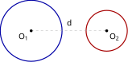
查看 TikZ 原始碼
\begin{document}
\begin{tikzpicture}[scale=1.5]
\coordinate (O1) at (-1.1,0);
\coordinate (O2) at (1.1,0);
\draw[blue!65!black,very thick] (O1) circle (0.9);
\draw[red!65!black,very thick] (O2) circle (0.6);
\draw[gray!70,dashed] (O1) -- (O2);
\fill (O1) circle (1.2pt) node[below left] {$O_1$};
\fill (O2) circle (1.2pt) node[below right] {$O_2$};
\node[above] at (0,0.07) {$d$};
\end{tikzpicture}
\end{document}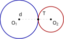
查看 TikZ 原始碼
\begin{document}
\begin{tikzpicture}[scale=1.5]
\coordinate (O1) at (-0.75,0);
\coordinate (O2) at (0.75,0);
\coordinate (T) at (0.15,0);
\draw[blue!65!black,very thick] (O1) circle (0.9);
\draw[red!65!black,very thick] (O2) circle (0.6);
\draw[gray!70,dashed] (O1) -- (O2);
\fill (T) circle (1.4pt);
\fill (O1) circle (1.2pt) node[below left] {$O_1$};
\fill (O2) circle (1.2pt) node[below right] {$O_2$};
\node[above] at (-0.7,0.07) {$d$};
\node[above right] at (0.28,0.12) {$T$};
\end{tikzpicture}
\end{document}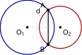
查看 TikZ 原始碼
\begin{document}
\begin{tikzpicture}[scale=1.5]
\coordinate (O1) at (-0.5,0);
\coordinate (O2) at (0.6,0);
\coordinate (A) at (0.196,0.571);
\coordinate (B) at (0.196,-0.571);
\draw[blue!65!black,very thick] (O1) circle (0.9);
\draw[red!65!black,very thick] (O2) circle (0.7);
\draw[gray!70,dashed] (O1) -- (O2);
\draw[very thick] (A) -- (B);
\fill (A) circle (1.4pt) node[above left] {$A$};
\fill (B) circle (1.4pt) node[below left] {$B$};
\fill (O1) circle (1.2pt) node[below left] {$O_1$};
\fill (O2) circle (1.2pt) node[below right] {$O_2$};
\node[above] at (-0.15,0.38) {$d$};
\end{tikzpicture}
\end{document}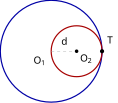
查看 TikZ 原始碼
\begin{document}
\begin{tikzpicture}[scale=1.5]
\coordinate (O1) at (0,0);
\coordinate (O2) at (0.6,0);
\coordinate (T) at (1.2,0);
\draw[blue!65!black,very thick] (O1) circle (1.2);
\draw[red!65!black,very thick] (O2) circle (0.6);
\draw[gray!70,dashed] (O1) -- (O2);
\fill (T) circle (1.4pt);
\node[below left] at (-0.05,-0.05) {$O_1$};
\fill (O2) circle (1.2pt) node[below right] {$O_2$};
\node[above] at (0.3,0.07) {$d$};
\node[above right] at (1.24,0.1) {$T$};
\end{tikzpicture}
\end{document}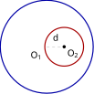
查看 TikZ 原始碼
\begin{document}
\begin{tikzpicture}[scale=1.5]
\coordinate (O1) at (0,0);
\coordinate (O2) at (0.45,0);
\draw[blue!65!black,very thick] (O1) circle (1.2);
\draw[red!65!black,very thick] (O2) circle (0.5);
\draw[gray!70,dashed] (O1) -- (O2);
\node[below left] at (-0.05,-0.05) {$O_1$};
\fill (O2) circle (1.2pt) node[below right] {$O_2$};
\node[above] at (0.22,0.07) {$d$};
\end{tikzpicture}
\end{document}设两圆为
按公共点的个数与包含关系，两圆的位置关系分为五类。
外离：
图 31-34A：外离的两圆。
蓝圆是
、红圆是 ，圆心分别为 、 ，灰虚线段 的长是圆心距 。
外切：
图 31-34B：外切的两圆。
两圆只有一个公共点
，它是切点； 、 、 依次在同一条直线上。
相交：
图 31-34C：相交的两圆。
两个公共点
、 的连线就是公共弦，粗黑线段即公共弦。
内切：
图 31-35A：内切的两圆。
在 的内部，两圆只有一个公共点 ； 、 、 依次在同一条直线上。
内含：
图 31-35B：内含的两圆。
整个落在 的内部，两圆没有公共点。
五种位置关系的前提是两圆不重合。若两圆的圆心相同而半径也相等，则它们是同一个圆，有无穷多个公共点，既不是相交（相交要求恰有两个公共点）也不是任何其它一类。下文的讨论都默认两圆不重合。
要比较两个圆的位置，先得看清它们的公共点。把两个圆的方程相减，二次项就消掉了，剩下的是一条直线，而两圆的公共点都在这条直线上。下面这条定理把这件工具立下来。
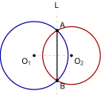
查看 TikZ 原始碼
\begin{document}
\begin{tikzpicture}[scale=1.5]
\coordinate (O1) at (-0.5,0);
\coordinate (O2) at (0.6,0);
\coordinate (A) at (0.176,0.737);
\coordinate (B) at (0.176,-0.737);
\draw[blue!65!black,very thick] (O1) circle (1.0);
\draw[red!65!black,very thick] (O2) circle (0.85);
\draw[gray!70,dashed] (0.176,-1.15) -- (0.176,1.25);
\draw[very thick] (A) -- (B);
\draw[gray!70,dashed] (O1) -- (O2);
\fill (A) circle (1.3pt) node[above right] {$A$};
\fill (B) circle (1.3pt) node[below right] {$B$};
\fill (O1) circle (1.2pt) node[below left] {$O_1$};
\fill (O2) circle (1.2pt) node[below right] {$O_2$};
\node[above] at (0.176,1.32) {$L$};
\end{tikzpicture}
\end{document}设两圆的一般方程是：
且两个圆的圆心不同。则把两个方程相减所得的方程
是一条一次方程，它的解集是一条直线
图 31-36：两圆方程相减所得的直线。
蓝圆是
、红圆是 ，灰虚线是相减所得的直线 ，粗黑线段 是两圆的公共弦， 与直线 是同一条直线。
设两圆的一般方程是
第一步：把两个方程相减，算出所得的方程是什么样子。 目的是看清二次项的去向，所以把两个方程的左边直接相减，再把字母相同的项并在一起：
第二步：说明它确实表示一条直线。 一次方程
圆心由 §31.1.2 的算法读出：
两个圆心不同，即
故相减所得的方程是一次方程，它的解集是一条直线，记作
两圆同心时
两圆重合时两个方程完全相同，相减得到
这两种情形都让两个圆的圆心相同，被定理的条件排除在外。
第三步：说明两圆的公共点都在
两式相减，按第一步中同样的合并方式得
这正是
第四步：两圆相交时，
定理说的是一般方程，而一般方程的
有了名字，判据就好说了：看圆心距
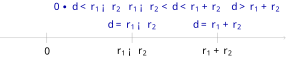
查看 TikZ 原始碼
\begin{document}
\begin{tikzpicture}[scale=1.5]
\draw[gray!60,->] (-0.7,0) -- (6.0,0);
\draw[gray!70] (0.4,-0.12) -- (0.4,0.12);
\draw[gray!70] (2.4,-0.12) -- (2.4,0.12);
\draw[gray!70] (4.4,-0.12) -- (4.4,0.12);
\node[below] at (0.4,-0.16) {$0$};
\node[below] at (2.4,-0.16) {$r_1-r_2$};
\node[below] at (4.4,-0.16) {$r_1+r_2$};
\node[blue!65!black] at (1.35,0.72) {$0 \le d < r_1-r_2$};
\node[blue!65!black] at (2.4,0.30) {$d = r_1-r_2$};
\node[blue!65!black] at (3.4,0.72) {$r_1-r_2 < d < r_1+r_2$};
\node[blue!65!black] at (4.4,0.30) {$d = r_1+r_2$};
\node[blue!65!black] at (5.3,0.72) {$d > r_1+r_2$};
\end{tikzpicture}
\end{document}设
把
图 31-37：两圆位置关系按圆心距
分类。 数轴上的三个分界点是
、 、 ，五段依次对应内含、内切、相交、外切、外离。
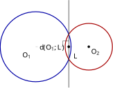
查看 TikZ 原始碼
\begin{document}
\begin{tikzpicture}[scale=1.5]
\coordinate (O1) at (0,0);
\coordinate (O2) at (1.8,0);
\coordinate (H) at (1.122,0);
\draw[blue!65!black,very thick] (O1) circle (1.2);
\draw[red!65!black,very thick] (O2) circle (0.8);
\draw[black!75,thick] (1.122,-1.4) -- (1.122,1.6);
\draw[gray!70,dashed] (O1) -- (H);
\fill (H) circle (1.3pt);
\draw (1.122,0.20) -- (0.922,0.20) -- (0.922,0);
\node[below left] at (-0.08,-0.12) {$O_1$};
\fill (O2) circle (1.2pt) node[below right] {$O_2$};
\node[right] at (1.20,-0.32) {$L$};
\node[above] at (0.56,-0.24) {$d(O_1, L)$};
\end{tikzpicture}
\end{document}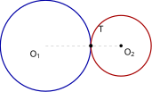
查看 TikZ 原始碼
\begin{document}
\begin{tikzpicture}[scale=1.5]
\coordinate (O1) at (0,0);
\coordinate (O2) at (2.0,0);
\coordinate (T) at (1.2,0);
\draw[blue!65!black,very thick] (O1) circle (1.2);
\draw[red!65!black,very thick] (O2) circle (0.8);
\draw[gray!70,dashed] (O1) -- (O2);
\fill (T) circle (1.4pt);
\node[below left] at (-0.05,-0.05) {$O_1$};
\fill (O2) circle (1.2pt) node[below right] {$O_2$};
\node[above right] at (1.32,0.28) {$T$};
\end{tikzpicture}
\end{document}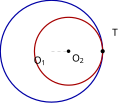
查看 TikZ 原始碼
\begin{document}
\begin{tikzpicture}[scale=1.5]
\coordinate (O1) at (0,0);
\coordinate (O2) at (0.4,0);
\coordinate (T) at (1.2,0);
\draw[blue!65!black,very thick] (O1) circle (1.2);
\draw[red!65!black,very thick] (O2) circle (0.8);
\draw[gray!70,dashed] (O1) -- (O2);
\fill (T) circle (1.4pt);
\node[below left] at (-0.05,-0.05) {$O_1$};
\fill (O2) circle (1.2pt) node[below right] {$O_2$};
\node[above right] at (1.34,0.28) {$T$};
\end{tikzpicture}
\end{document}查看 TikZ 原始碼
\begin{document}
\begin{tikzpicture}[scale=1.5]
\coordinate (O1) at (0,0);
\coordinate (O2) at (0.4,0);
\coordinate (P) at (1.0,0);
\draw[blue!65!black,very thick] (O1) circle (1.2);
\draw[red!65!black,very thick] (O2) circle (0.6);
\draw[gray!70,dashed] (O1) -- (P);
\fill (P) circle (1.4pt);
\node[below left] at (-0.05,-0.05) {$O_1$};
\fill (O2) circle (1.2pt) node[below right] {$O_2$};
\node[above] at (0.5,0.08) {$d+r_2$};
\node[below right] at (1.0,-0.12) {$P$};
\end{tikzpicture}
\end{document}查看 TikZ 原始碼
\begin{document}
\begin{tikzpicture}[scale=1.5]
\coordinate (O1) at (0,0);
\coordinate (O2) at (2.6,0);
\coordinate (P) at (2.0,0);
\draw[blue!65!black,very thick] (O1) circle (1.0);
\draw[red!65!black,very thick] (O2) circle (0.6);
\draw[gray!70,dashed] (O1) -- (P);
\fill (P) circle (1.4pt);
\node[below left] at (-0.05,-0.05) {$O_1$};
\fill (O2) circle (1.2pt) node[below right] {$O_2$};
\node[above] at (1.5,0.08) {$d-r_2$};
\node[below left] at (1.95,-0.12) {$P$};
\end{tikzpicture}
\end{document}设
证明分三步：先把两个方程相减得到一条直线，再算出圆心到这条直线的距离，最后把距离与半径作比较，数出公共点的个数。
第一步：两式相减，得到公共点必在的一条直线。
由上面的定理（两圆方程相减所得的直线），相减所得的直线
是一条直线，两圆的公共点都在
反过来，
记
于是
第二步：算圆心到
图 31-38：
就是圆心 到直线 的垂线段长。 灰虚线的垂足落在
上，直角记号标出垂直； 是两圆方程相减所得的那条直线。
圆心与半径由 §31.1.2 的算法读出：
把
分子的各项展开，并把
分母是
把
第三步：把距离与半径作比较。 由 §29.2.1 的定理（直线与圆的位置关系），
先看
右边的不等式移项得
左边的不等式移项得
两者合起来正是
同样的整理还给出另外两种情形。
于是公共点的个数由
- 两个公共点
- 恰有一个公共点
- 没有公共点
第四步：区分两个「相切」。
先看
故
此时
图 31-39A：外切时，
、 、 依次在同一条直线上。 蓝圆是
、红圆是 ， 是唯一的公共点， 、 。
再看
故
在射线
于是两圆恰有一个公共点，且
图 31-39B：内切时，
、 、 依次在同一条直线上。 红圆
整个落在蓝圆 的内部， 是唯一的公共点， 、 。
第五步：区分两个「没有公共点」。
设
故
图 31-40：内含时，
上离 最远的点是 。 灰虚线
经过 ，长 ，它小于 ，故 上每点都在 内部。
反过来，设
在从
两个方向合并，可得「没有公共点且内含
第三步已证「没有公共点
故
图 31-41：外离时，
上离 最近的点是 。 灰虚线段
长 ，它大于 ，故 上每点都在 外部。
第六步：把
由第一步，
第四、五步又把三种情形与五种位置关系一一对上，五行的判据至此全部成立。
判断下列各组圆的位置关系，并指出圆心距。
(a)
(b)
(c)
三组都要先读出圆心与半径，再比较
(a)
(b) 同上，
(c) 两个方程都先配方：
两圆的圆心相同，都是
三组都只用了一次距离公式与一次比较，不必画图。数轴一览（图 31-37）在这里很好用：先算
31.3.2 两圆的公切线（Common Tangents of Two Circles）
一条直线同时与两个圆相切，就叫这两个圆的公切线。按两个圆在它的同侧还是异侧，公切线分两类。
查看 TikZ 原始碼
\begin{document}
\begin{tikzpicture}[scale=1.5]
\coordinate (O1) at (-1.2,0);
\coordinate (O2) at (1.0,0);
\coordinate (T1) at (-1.036,0.885);
\coordinate (T2) at (1.091,0.492);
\draw[blue!65!black,very thick] (O1) circle (0.9);
\draw[red!65!black,very thick] (O2) circle (0.5);
\draw[black!70,very thick] (-1.526,0.976) -- (1.581,0.401);
\draw[gray!70,dashed] (O1) -- (T1) (O2) -- (T2);
\fill (T1) circle (1.4pt);
\fill (T2) circle (1.4pt);
\fill (O1) circle (1.2pt) node[below left] {$O_1$};
\fill (O2) circle (1.2pt) node[below right] {$O_2$};
\node[above right] at (-0.98,0.90) {$T_1$};
\node[above right] at (1.15,0.51) {$T_2$};
\node[above right] at (-1.6,1.02) {$\ell$};
\end{tikzpicture}
\end{document}查看 TikZ 原始碼
\begin{document}
\begin{tikzpicture}[scale=1.5]
\coordinate (O1) at (-1.2,0);
\coordinate (O2) at (1.0,0);
\coordinate (T1) at (-0.627,0.694);
\coordinate (T2) at (0.682,-0.386);
\draw[blue!65!black,very thick] (O1) circle (0.9);
\draw[red!65!black,very thick] (O2) circle (0.5);
\draw[black!70,very thick] (-0.935,0.948) -- (0.990,-0.640);
\draw[gray!70,dashed] (O1) -- (T1) (O2) -- (T2);
\fill (T1) circle (1.4pt);
\fill (T2) circle (1.4pt);
\fill (O1) circle (1.2pt) node[below left] {$O_1$};
\fill (O2) circle (1.2pt) node[below right] {$O_2$};
\node[above right] at (-0.57,0.71) {$T_1$};
\node[below left] at (0.56,-0.39) {$T_2$};
\node[above left] at (-1.0,1.02) {$\ell$};
\end{tikzpicture}
\end{document}同时与
外公切线：两个圆心在公切线的同侧的公共切线，如图 31-42A 所示。
图 31-42A：一条外公切线。
蓝圆是
、红圆是 ，黑粗线是外公切线 ， 、 是两个切点。 两个圆心
、 都在 的同一侧，灰虚线段 、 是两条半径。
内公切线：两个圆心在公切线的异侧的公共切线，如图 31-42B 所示。
图 31-42B：一条内公切线。
黑粗线是内公切线
， 、 是两个切点； 与 分别在 的两侧。
查看 TikZ 原始碼
\begin{document}
\begin{tikzpicture}[scale=1.5]
\coordinate (O1) at (-0.9,0);
\coordinate (O2) at (1.0,0);
\draw[blue!65!black,very thick] (O1) circle (0.7);
\draw[red!65!black,very thick] (O2) circle (0.4);
\draw[black!70,thick] (-1.086,0.738) -- (1.359,0.348);
\draw[black!70,thick] (-1.086,-0.738) -- (1.359,-0.348);
\draw[black!70,thick] (-0.740,0.745) -- (1.013,-0.500);
\draw[black!70,thick] (-0.740,-0.745) -- (1.013,0.500);
\draw[gray!70,dashed] (O1) -- (O2);
\fill (O1) circle (1.2pt);
\node[below left] at (-0.95,-0.05) {$O_1$};
\fill (O2) circle (1.2pt) node[below right] {$O_2$};
\end{tikzpicture}
\end{document}设
| 位置关系 | 条件 | 外公切线 | 内公切线 | 总数 |
|---|---|---|---|---|
| 外离 | ||||
| 外切 | ||||
| 相交 | ||||
| 内切 | ||||
| 内含 |
条数最多的是外离：这时四条公切线都在，如图 31-43 所示。
图 31-43：外离两圆的四条公切线。
蓝圆是
、红圆是 ，两条斜度小的黑线是外公切线，两条斜度大的黑线是内公切线，灰虚线段是圆心距 。
查看 TikZ 原始碼
\begin{document}
\begin{tikzpicture}[scale=1.5]
\coordinate (O1) at (-0.9,0);
\coordinate (O2) at (1.0,0);
\coordinate (S) at (-0.853,0.296);
\draw[gray!70,dashed] (O1) circle (0.3);
\draw[blue!65!black,very thick] (O1) circle (0.7);
\draw[red!65!black,very thick] (O2) circle (0.4);
\draw[gray!70] (-1.051,0.328) -- (1.197,-0.032);
\draw[gray!70,dashed] (O1) -- (S);
\fill (S) circle (1.3pt) node[above left] {$S$};
\fill (O1) circle (1.2pt);
\node[below left] at (-0.95,-0.05) {$O_1$};
\fill (O2) circle (1.2pt) node[below right] {$O_2$};
\node[above right] at (0.20,0.135) {$\ell'$};
\end{tikzpicture}
\end{document}查看 TikZ 原始碼
\begin{document}
\begin{tikzpicture}[scale=1.5]
\coordinate (O1) at (-0.9,0);
\coordinate (O2) at (1.0,0);
\coordinate (T1) at (-0.79,0.691);
\coordinate (T2) at (1.063,0.395);
\coordinate (S) at (-0.853,0.296);
\draw[gray!70,dashed] (O1) circle (0.3);
\draw[blue!65!black,very thick] (O1) circle (0.7);
\draw[red!65!black,very thick] (O2) circle (0.4);
\draw[black!70,very thick] (-1.086,0.738) -- (1.359,0.348);
\draw[gray!70] (-1.051,0.328) -- (1.197,-0.032);
\draw[gray!70,->] (T2) -- (O2);
\draw[gray!70,->] (T1) -- (S);
\draw[gray!70,dashed] (O1) -- (O2);
\fill (T1) circle (1.2pt) node[above left] {$T_1$};
\fill (T2) circle (1.2pt) node[below right] {$T_2$};
\fill (S) circle (1.2pt) node[below left] {$S$};
\fill (O1) circle (1.2pt);
\node[below left] at (-0.95,-0.05) {$O_1$};
\fill (O2) circle (1.2pt) node[below right] {$O_2$};
\node[above right] at (1.44,0.46) {$\ell$};
\node[above left] at (-1.00,0.42) {$\ell'$};
\end{tikzpicture}
\end{document}查看 TikZ 原始碼
\begin{document}
\begin{tikzpicture}[scale=1.5]
\coordinate (O1) at (-1.0,0);
\coordinate (O2) at (1.0,0);
\draw[blue!65!black,very thick] (O1) circle (0.6);
\draw[red!65!black,very thick] (O2) circle (0.6);
\draw[black!70,very thick] (-1.6,0.6) -- (1.6,0.6);
\draw[black!70,very thick] (-1.6,-0.6) -- (1.6,-0.6);
\draw[gray!70,dashed] (O1) -- (O2);
\fill (O1) circle (1.2pt) node[below left] {$O_1$};
\fill (O2) circle (1.2pt) node[below right] {$O_2$};
\node[above right] at (1.5,0.6) {$\ell_1$};
\node[below right] at (1.5,-0.6) {$\ell_2$};
\end{tikzpicture}
\end{document}查看 TikZ 原始碼
\begin{document}
\begin{tikzpicture}[scale=1.5]
\coordinate (O1) at (-0.9,0);
\coordinate (O2) at (1.0,0);
\coordinate (S) at (-0.263,0.897);
\draw[gray!70,dashed] (O1) circle (1.1);
\draw[blue!65!black,very thick] (O1) circle (0.7);
\draw[red!65!black,very thick] (O2) circle (0.4);
\draw[gray!70] (-0.263,0.897) -- (1.122,-0.087);
\draw[gray!70,dashed] (O1) -- (S);
\fill (S) circle (1.3pt) node[above left] {$S$};
\fill (O1) circle (1.2pt);
\node[below left] at (-0.95,-0.05) {$O_1$};
\fill (O2) circle (1.2pt) node[below right] {$O_2$};
\node[above right] at (0.30,0.475) {$\ell'$};
\end{tikzpicture}
\end{document}查看 TikZ 原始碼
\begin{document}
\begin{tikzpicture}[scale=1.5]
\coordinate (O1) at (-0.9,0);
\coordinate (O2) at (1.0,0);
\coordinate (T1) at (-0.495,0.571);
\coordinate (T2) at (0.768,-0.326);
\coordinate (S) at (-0.263,0.897);
\draw[gray!70,dashed] (O1) circle (1.1);
\draw[blue!65!black,very thick] (O1) circle (0.7);
\draw[red!65!black,very thick] (O2) circle (0.4);
\draw[black!70,very thick] (-0.740,0.745) -- (1.013,-0.500);
\draw[gray!70] (-0.263,0.897) -- (1.122,-0.087);
\draw[gray!70,->] (T2) -- (O2);
\draw[gray!70,->] (T1) -- (S);
\draw[gray!70,dashed] (O1) -- (O2);
\fill (T1) circle (1.2pt) node[below left] {$T_1$};
\fill (T2) circle (1.2pt) node[below left] {$T_2$};
\fill (S) circle (1.2pt) node[above right] {$S$};
\fill (O1) circle (1.2pt);
\node[below left] at (-0.95,-0.05) {$O_1$};
\fill (O2) circle (1.2pt) node[below right] {$O_2$};
\node[above left] at (-0.86,0.82) {$\ell$};
\node[above left] at (0.45,0.62) {$\ell'$};
\end{tikzpicture}
\end{document}设
证明的想法是化归：把公切线的问题变成「过一点作一个圆的切线」的问题，后者的条数 §29.2.1 的定理（外点的两条切线）已经答完了。
外公切线：把
图 31-44A：外公切线的缩圆法（
的情形）。 灰虚线画出的圆以
为圆心、 为半径，灰线 是过 作它的切线， 是切点。
由 §29.2.1 的定理（切线垂直于过切点的半径），
两圆在
把
图 31-44B：把外公切线
平移 得到过 的直线 。 黑粗线是外公切线
，灰线是它沿 的方向平移 之后得到的直线 ，两条直线互相平行。 灰箭头表示平移：
移到 ， 移到 ，两段位移都等于 。
平移使
故
反过来，过
两次平移互为逆运算，故外公切线与「过
- 外离（
- 外切（
- 相交（
- 内切（
- 内含（
图 31-44C：
时缩圆法失效，两条外公切线都平行于圆心连线。 两个圆半径相等，两条外公切线
、 都与圆心连线 平行。
两种情形合起来：
内公切线：把
图 31-45A：内公切线的扩圆法。
灰虚线画出的圆以
为圆心、 为半径，灰线 是过 作它的切线， 是切点。
与外公切线同样的推理：
把
平移把
图 31-45B：把内公切线
平移 得到过 的直线 。 黑粗线是内公切线
，灰线是它沿 的方向平移 之后得到的直线 ，两条直线互相平行。 灰箭头表示平移：
移到 ， 移到 ，两段位移都等于 。
于是内公切线与「过
- 外离（
- 外切（
- 相交（
- 内切（
内含（
这里的半径
把外公切线与内公切线的条数按五种位置关系并列，即得定理中的条数：
- 外离（
- 外切（
- 相交（
- 内切（
- 内含（
查看 TikZ 原始碼
\begin{document}
\begin{tikzpicture}[scale=1.5]
\coordinate (O1) at (0,0);
\coordinate (O2) at (2.2,0);
\coordinate (T1) at (0.2273,0.9737);
\coordinate (T2) at (2.3137,0.4868);
\draw[blue!65!black,very thick] (O1) circle (1.0);
\draw[red!65!black,very thick] (O2) circle (0.5);
\draw[black!70,very thick] (0.2273,0.9737) -- (2.3137,0.4868);
\draw[gray!70,dashed] (O1) -- (T1) (O2) -- (T2);
\draw[gray!70,dashed] (O1) -- (O2);
\fill (O1) circle (1.2pt) node[below left] {$O_1$};
\fill (O2) circle (1.2pt) node[below right] {$O_2$};
\node[above right] at (0.29,0.99) {$T_1$};
\node[above right] at (2.37,0.51) {$T_2$};
\node[above left] at (0.10,0.50) {$r_1$};
\node[right] at (2.32,0.30) {$r_2$};
\node[below] at (1.1,-0.15) {$d$};
\end{tikzpicture}
\end{document}设
并把
图 31-46A：一条外公切线与它的两个切点。
蓝圆是
、红圆是 ，黑粗线段 是一条外公切线，灰虚线是两条半径 、 与圆心连线 。
、 、 。
查看 TikZ 原始碼
\begin{document}
\begin{tikzpicture}[scale=1.5]
\coordinate (O1) at (0,0);
\coordinate (O2) at (2.2,0);
\coordinate (T1) at (0.2273,0.9737);
\coordinate (T2) at (2.3137,0.4868);
\coordinate (H) at (0.1136,0.4868);
\draw[blue!65!black,very thick] (O1) circle (1.0);
\draw[red!65!black,very thick] (O2) circle (0.5);
\draw[black!70,very thick] (0.2273,0.9737) -- (2.3137,0.4868);
\draw[gray!70,dashed] (O1) -- (T1) (O2) -- (T2);
\draw[gray!70,dashed] (O1) -- (O2);
\draw[gray!70] (H) -- (O2);
\draw[gray!70] (0.0795,0.3407) -- (0.2256,0.3067) -- (0.2597,0.4527);
\fill (H) circle (1.2pt) node[below right] {$H$};
\fill (O1) circle (1.2pt) node[below left] {$O_1$};
\fill (O2) circle (1.2pt) node[below right] {$O_2$};
\node[above right] at (0.29,0.99) {$T_1$};
\node[above right] at (2.37,0.51) {$T_2$};
\node[left] at (-0.02,0.243) {$r_1-r_2$};
\node[above right] at (1.157,0.243) {$L_{\mathrm{out}}$};
\node[below] at (1.1,-0.15) {$d$};
\end{tikzpicture}
\end{document}设
过
图 31-46B：证明中作出的直角三角形
。
是过 平行于 的直线与 的交点，直角方块标在 处。
、 、 。
由 §29.2.1 的定理（切线垂直于过切点的半径），
于是四边形
平行四边形的另一组对边也相等，
在直角三角形
外公切线存在时 §31.3.1 的判据给出
于是每一条外公切线的长度都是
两条外公切线关于
查看 TikZ 原始碼
\begin{document}
\begin{tikzpicture}[scale=1.5]
\coordinate (O1) at (0,0);
\coordinate (O2) at (1.9,0);
\coordinate (T1) at (0.6631,0.6085);
\coordinate (T2) at (1.5316,-0.3381);
\draw[blue!65!black,very thick] (O1) circle (0.9);
\draw[red!65!black,very thick] (O2) circle (0.5);
\draw[black!70,very thick] (0.6631,0.6085) -- (1.5316,-0.3381);
\draw[gray!70,dashed] (O1) -- (T1) (O2) -- (T2);
\fill (O1) circle (1.2pt) node[below left] {$O_1$};
\fill (O2) circle (1.2pt) node[below right] {$O_2$};
\node[above left] at (0.33,0.30) {$r_1$};
\node[left] at (0.55,0.6085) {$T_1$};
\node[above] at (1.5316,-0.25) {$T_2$};
\node[below] at (0.95,-0.12) {$d$};
\node[above right] at (1.72,0.10) {$r_2$};
\end{tikzpicture}
\end{document}设
并把
图 31-47A：一条内公切线与它的两个切点。
蓝圆是
、红圆是 ，黑粗线段 是一条内公切线，灰虚线是两条半径 、 与圆心连线 。
、 、 。
查看 TikZ 原始碼
\begin{document}
\begin{tikzpicture}[scale=1.5]
\coordinate (O1) at (0,0);
\coordinate (O2) at (1.9,0);
\coordinate (S) at (1.0315,0.9465);
\coordinate (T1) at (0.6631,0.6085);
\coordinate (T2) at (1.5316,-0.3381);
\draw[blue!65!black,very thick] (O1) circle (0.9);
\draw[red!65!black,very thick] (O2) circle (0.5);
\draw[black!70,very thick] (0.6631,0.6085) -- (1.5316,-0.3381);
\draw[gray!70,dashed] (O1) -- (T1) (O2) -- (T2);
\draw[gray!70,dashed] (O1) -- (S) (S) -- (O2) (O1) -- (O2);
\draw[gray!70] (0.921,0.845) -- (1.022,0.7346) -- (1.133,0.836);
\fill (S) circle (1.2pt) node[above] {$S$};
\fill (O1) circle (1.2pt) node[below left] {$O_1$};
\fill (O2) circle (1.2pt) node[below right] {$O_2$};
\node[left] at (0.55,0.6085) {$T_1$};
\node[above] at (1.5316,-0.25) {$T_2$};
\node[above right] at (1.157,0.135) {$L_{\mathrm{in}}$};
\end{tikzpicture}
\end{document}设
把
过
图 31-47B：证明中作出的直角三角形
。
在 的延长线上， ， ；直角方块标在 处。
， 。
由 §29.2.1 的定理（切线垂直于过切点的半径），
在直角三角形
内公切线存在时 §31.3.1 的判据给出
查看 TikZ 原始碼
\begin{document}
\begin{tikzpicture}[scale=1.5]
\coordinate (O1) at (0,0);
\coordinate (O2) at (3.0,0);
\draw[blue!65!black,very thick] (O1) circle (1.0);
\draw[red!65!black,very thick] (O2) circle (1.3333);
\draw[black!70,thick] (-0.4589,0.9549) -- (3.1997,1.3640);
\draw[black!70,thick] (-0.4589,-0.9549) -- (3.1997,-1.3640);
\draw[black!70,thick] (0.6207,0.8229) -- (2.1201,-1.0325);
\draw[black!70,thick] (0.6207,-0.8229) -- (2.1201,1.0325);
\draw[gray!70,dashed] (O1) -- (O2);
\fill (O1) circle (1.2pt) node[below left] {$O_1$};
\fill (O2) circle (1.2pt) node[below right] {$O_2$};
\end{tikzpicture}
\end{document}已知两圆
(a) 两圆的圆心距与位置关系；
(b) 外公切线与内公切线的条数；
(c) 两种公切线的长度。
(a) 两个圆心分别是
(b) 外离时外公切线有
图 31-48：示例的四条公切线。
蓝圆是
、红圆是 ，两条斜度小的黑线是外公切线，两条斜度大的黑线是内公切线；灰虚线段是圆心距 。
(c) 把
即外公切线的长度是
两条公式合起来看就是一句话：直角三角形的斜边是圆心距
31.3.3 两圆的公共弦（The Common Chord）
把两个圆的一般方程相减，所得的直线就是公共弦所在的直线，这是 §31.3.1 的定理（两圆方程相减所得的直线）已经给出的办法。本节把它用在两圆的两种特殊位置上：相交时求公共弦所在直线与公共弦的长，相切时这条直线恰好是公切线。
相减所得的直线还有一层读法：它是两圆的根轴，对两个圆的幂相等的点恰在这条直线上（幂的定义见 §29.2.3 的定义（点对圆的幂））。
两圆相交时它就是公共弦所在的直线，两圆相切时它就是过切点的公切线，两圆没有公共点时它仍然存在，只是与两个圆都不相交。
两圆相切时没有公共弦，但相减所得的直线仍然有用。
查看 TikZ 原始碼
\begin{document}
\begin{tikzpicture}[scale=1.5]
\coordinate (O1) at (0,0);
\coordinate (O2) at (1.6,0);
\coordinate (T) at (1,0);
\draw[blue!65!black,very thick] (O1) circle (1.0);
\draw[red!65!black,very thick] (O2) circle (0.6);
\draw[black!70,very thick] (1,-1.2) -- (1,1.2);
\draw[gray!70,dashed] (O1) -- (O2);
\fill (T) circle (1.3pt);
\node[above right] at (1.15,0.45) {$T$};
\fill (O1) circle (1.2pt);
\node[below left] at (-0.05,-0.05) {$O_1$};
\fill (O2) circle (1.2pt) node[below right] {$O_2$};
\node[above] at (1,1.3) {$\ell$};
\end{tikzpicture}
\end{document}设两圆相切（外切或内切），切点为
图 31-49：两圆外切时相减所得的直线（内公切线）。
蓝圆是
、红圆是 ，切点是 ；黑粗线是相减所得的直线 ，灰虚线段是圆心连线 。 两个圆心在
的异侧，故 是内公切线；两段半径 、 都垂直于 ，它们的长就是两个圆心到 的距离。
设
第一步：
第二步：两个圆心到
第三步：把相切的条件代进去。 两圆相切时，§31.3.1 的判据给出
外切时
内切时
对
- 外切时
- 内切时
两者取绝对值后都是
由 §29.2.1 的定理（直线与圆的位置关系），圆心到直线的距离等于半径就是相切，故
它又过两圆的公共点
第四步：这条公切线是内公切线还是外公切线。 两圆相切时公共点只有一个，过这个点的公切线也只有一条，不必再去数条数。
它是哪一类，看两个圆心在
- 外切时：
- 内切时：
分类依据见 §31.3.2 的定义（公切线、外公切线与内公切线）。
查看 TikZ 原始碼
\begin{document}
\begin{tikzpicture}[scale=1.5]
\coordinate (O1) at (0,0);
\coordinate (O2) at (0,0.75);
\coordinate (A) at (1.0,0.75);
\coordinate (B) at (-1.0,0.75);
\draw[gray!60,->] (-1.8,0) -- (1.8,0) node[below right] {$x$};
\draw[gray!60,->] (0,-1.5) -- (0,2.1) node[above left] {$y$};
\draw[blue!65!black,very thick] (O1) circle (1.25);
\draw[red!65!black,very thick] (O2) circle (1.0);
\draw[gray!70] (-1.6,0.75) -- (1.6,0.75);
\draw[very thick] (A) -- (B);
\draw[gray!70,dashed] (O1) -- (O2);
\fill (A) circle (1.3pt) node[above right] {$A$};
\fill (B) circle (1.3pt) node[above left] {$B$};
\fill (O1) circle (1.2pt);
\node[below left] at (-0.05,-0.06) {$O_1$};
\fill (O2) circle (1.2pt);
\node[above right] at (0.15,0.75) {$O_2$};
\node[above] at (1.5,0.75) {$L$};
\end{tikzpicture}
\end{document}(a) 已知两圆
(b) 把
(a) 先把
圆心距
把
即公共弦所在直线是
把
用弦长公式核对：
图 31-50：示例 (a) 的两圆与公共弦。
蓝圆是
、红圆是 ，圆心分别是 、 。 灰线与粗黑线段都在
上，粗黑线段 是公共弦，两个端点为 、 。
(b) 把
相减：
按 §31.3.3 的推论，这条直线就是过切点的公切线：切点是
两问共用一个手法：相减一次，二次项消去，剩下一条一次方程。相交时它是公共弦，相切时它是公切线，没有公共点时它仍是根轴（§31.3.3 的注记（这条直线的另一个名字：根轴））。
31.4 小结（Summary）
本章把「圆」从几何对象变成了方程。主干只有一句话：圆是到定点距离等于定长的点集（§30.1.2 的定义（圆、圆的内部与圆盘）），把这句话用距离公式翻译成坐标，就得到标准方程；把标准方程展开，就得到一般方程。后面的一切都是这句话的推论：把点、直线、圆的位置关系写成方程之间的关系，就有了位置判据；把「恰有一个公共点」写成方程的条件，就有了切线算法。
全章的分工要先说清，否则容易重复劳动。几何层已经在 平面几何(II) 里证完了：切线的定义与判定、直线与圆的三种位置关系、弦的垂直平分线性质、外点两条切线等长、切线长与圆幂。本章不再重证这些结论，只把它们翻译成坐标：距离换成坐标式，位置关系换成代入后看符号或算判别式，切线换成设斜率解方程。遇到需要回指的地方，正文都写明了节号。
方法总表
| 要做的事 | 走法 | 出处 |
|---|---|---|
| 由标准方程读圆心与半径 | 直接读出，括号内取相反号、右端开方 | §31.1.1 |
| 判断一个方程是不是圆 | 算 |
§31.1.2 |
| 由一般方程读圆心与半径 | 配方，或用 |
§31.1.2 |
| 由圆心与半径求方程 | 直接写标准方程 | §31.1.1 |
| 由圆上三点求方程 | 待定系数法（设一般方程解三元一次方程组）或几何法（两垂直平分线交点） | §31.1.4 |
| 由圆心与一条切线求方程 | 半径等于圆心到直线的距离 | §31.1.4 |
| 由直径两端点求方程 | 套直径式（增润） | §31.1.4 |
| 判断点与圆的位置 | 坐标代入方程左端看符号，不必先求圆心半径 | §31.2.1 |
| 判断直线与圆的交点个数 | 算 |
§31.2.2 |
| 求直线与圆的交点坐标 | 解出一个变量、代入、算判别式、回代 | §31.2.2 |
| 求弦长 | §31.2.2 | |
| 求过圆上一点的切线 | 直接套 |
§31.2.3 |
| 求过圆外一点的切线 | 设斜率、用 |
§31.2.3 |
| 求已知斜率的切线 | 设 |
§31.2.3 |
| 求切线长 | §31.2.3 | |
| 判断两圆的位置关系 | 算 |
§31.3.1 |
| 数公切线的条数 | 查条数表 | §31.3.2 |
| 求两种公切线的长度 | 两个直角三角形，直角边分别是 |
§31.3.2 |
| 求两圆方程相减所得的直线（公共弦） | 两个方程相减 | §31.3.1 的定理（两圆方程相减所得的直线） |
公式总表
| 名称 | 表达式或条件 | 备注 |
|---|---|---|
| 圆的标准方程 | 圆心 |
|
| 圆的一般方程 | ||
| 判别量 | ||
| 圆心与半径 | 由一般方程读出 | |
| 点与圆的符号判据 | 负在内、零在上、正在外 | |
| 直线与圆的位置 | 两个、一个、零个公共点 | |
| 弦长 | ||
| 过圆上一点的切线 | 圆心在原点时化为 |
|
| 切线长 | 点须在圆外 | |
| 两圆位置关系 | 外离、外切、相交、内切、内含 | |
| 外公切线长 | 须 |
|
| 内公切线长 | 须 |
|
| 两圆方程相减所得的直线 | 两圆的公共点都在此线上；相交时为公共弦，相切时为公切线 |
五处最容易出错的地方
其一，把一般方程当成圆。 形如
其二，把符号判据的符号记反。 代入方程左端所得的数为负时点在圆内，不是圆外。理由很直接：那个数等于
其三，漏掉铅垂的切线。 「设切线斜率为
其四，把「交点个数」与「交点坐标」混为一谈。 只问个数时算
其五，相减求公共弦前忘了化系数。 一般方程的
中英对照词汇表（Glossary）
| 中文术语 | 英文 | 符号或简写 | 备注 |
|---|---|---|---|
| 标准方程 | standard equation | 圆心 |
|
| 一般方程 | general equation | 展开标准方程所得 | |
| 判别量 | discriminant | ||
| 配方法 | completing the square | 由一般方程读圆心与半径 | |
| 待定系数法 | method of undetermined coefficients | 设一般方程代入三点 | |
| 几何法 | geometric method | 两垂直平分线的交点为圆心 | |
| 直径式 | diameter form | 扩展阅读内容 | |
| 符号判据 | sign test | 把点的坐标代入方程左端 | |
| 弦长 | chord length | ||
| 判别式 | discriminant | 一元二次方程的判别式 | |
| 割线 | secant | 与圆有两个公共点（§29.2.1） | |
| 切线 | tangent | 与圆恰有一个公共点（§29.2.1） | |
| 切点 | point of contact | 切线与圆的公共点 | |
| 切线长 | tangent length | 圆外一点到切点的距离 | |
| 铅垂切线 | vertical tangent | 设斜率时容易漏掉 | |
| 圆心距 | distance between centres | 两圆圆心的距离 | |
| 外离 | separated | 两圆没有公共点且互不包含 | |
| 外切 | externally tangent | 两圆恰有一个公共点且互不包含 | |
| 内切 | internally tangent | 一圆在另一圆内部且相切 | |
| 内含 | contained | 一圆在另一圆内部且无公共点 | |
| 公切线 | common tangent | 同时与两圆相切 | |
| 外公切线 | direct common tangent | 两个圆心在它的同侧 | |
| 内公切线 | transverse common tangent | 两个圆心在它的异侧 | |
| 缩圆法 | shrinking method | 把外公切线化归为点到圆的切线 | |
| 扩圆法 | enlarging method | 把内公切线化归为点到圆的切线 | |
| 公共弦 | common chord | 两圆相交时两个公共点的连线 | |
| 根轴 | radical axis | 两圆方程相减所得的直线 | |
| 圆幂 | power of a point | 见 §29.2.3 |
备课提示（Teaching Notes）
- 官方依据：本章对应必修学习单位 13「圆方程」。13.1「理解圆方程」属基础课题，要求的两类求方程条件是「圆心的坐标及半径的长度」与「圆上任意的三点坐标」，并要求能由圆方程描述圆心、半径与「某点在圆内、圆外或圆上」；13.2「求直线与圆交点的坐标及理解直线与圆相交的各种可能情况」标注为非基础课题，课程阐释写明可「利用二次方程的判别式判断已知直线与圆有多少个交点及求该圆的切线方程」，并建议教师引导学生用平面几何方法证明没有直线可与一圆相交多于两点（这一条落在 §29.2.1）。必修 11.5（非基础课题）已给出「由圆外一点至圆作两切线」的三条性质，本章的 §31.2.3 只把其中的长度与角度关系写成坐标式。
- 本章与第 29 章的分工：切线垂直于过切点的半径、切线的判定、直线与圆的三种位置关系、外点两条切线等长、切割线定理与点对圆的幂，全部已在 §29.1.1、§29.2.1、§29.2.3 证完，本章一律回指、不重证。课堂上若学生提出「为什么圆心到直线的距离等于半径就相切」，应引回 §29.2.1 的定理，而不是在 §31.2 重讲一遍。
- 两条判据的取舍：
- §31.3 的定位：两圆的位置关系、公切线的条数与长度、两圆相减所得直线（公共弦与根轴），在必修、M1、M2 的 91 个单位中检索都没有对应，属完全超纲的扩展内容。正文已在 §31.3 的节首统一自标「本节内容超出 DSE 常规课程的要求，作扩展阅读」，课堂可按学生能力取舍，不进入统一测验范围；但 §31.3.1 的五行判据、§31.3.2 的条数表与两条长度公式是本章唯一一处处理两个圆的地方，竞赛或延伸课可直接取用。
- 难度上限打标依据：§31.1 的 T 维取直径式的证明（要想到半圆内圆周角为直角、再按铅垂与非铅垂分情形），C 维取三元一次方程组与配方，E 维取「按条件选择方程形式与求法路线」，Q 维取与 §15.2、§18.1、§20.4、§29.1、§30.1 的联动；§31.2 的 T 维取判别式判据的证明（分两种情形建立公共点与实根的一一对应）与切线公式的三情形证明，C 维取联立解二次方程与解斜率的二次方程，E 维取「过圆外一点时自行想到要检查铅垂切线」，Q 维取与 §18.2、§18.3、§20.5、§21.8、§29.1 的联动；§31.3 的 T 维取五行判据的完整证明（相减得直线、把圆心与半径代入点到直线的距离公式、用不等式变形读出五种情形、以三角形不等式区分内含与外离），C 维取距离公式的代入与代数变形，E 维取缩圆扩圆化归与
- 两条判据同源，可以互相核对：把点的坐标代入一般方程左端所得的数，就是
- 常见错误：①把
- 遗留待用户目视（DoD 16）：本章共 69 幅图（图 31-1 至 31-51，含 31-6A／6B、31-16A／B、31-21A／B／C、31-26A／B／C、31-34A／B／C、31-35A／B、31-39A／B、31-40A／B、31-43A／B、31-45A／B／C、31-46A／B、31-47A／B、31-48A／B、31-50A／B 十四组分幅），全部只在 TeX Live 下通过编译与标签互叠检查，插件内的实际渲染仍须在 Obsidian 里过目。
✅ 已執行（2026-10-05·第七輪）：按用戶 10 處 %% 批注直接修改（開場指示「我注释了课题讲义，直接修改」，並追加全局口述規則「按步驟單獨配圖，對每一個新增的幾何對象或操作都要單獨配圖演示，且不能展示當前與以前步驟沒有出現的物件」）。兩個岔口經提問鎖定：①「兩圓方程相減」的定理整塊由 §31.3.3 前移到 §31.3.1（§31.3.3 改為應用）；②配圖擴量只做 §31.3。落地：①定理（兩圓方程相減所得的直線）前移至 §31.3.1 並推廣到「兩圓圓心不同」的一般情形，證明重寫為四步（相減的展開不省略任何計算、係數不全為零、公共點都在 %% 零殘留、全章無向量字樣。姊妹側：《給讀者的簡介》更新日誌、關聯分析第二／三部分、詞彙表 Ch44 同批同步。
✅ 已執行（2026-10-05·第八輪）：按用戶 15 處 %% 批注直接修改（開場指示「我再次注射了 chapter 三十一课题讲义，直接修改。详细对照规划说明方案，检查是否满足其要求。」）。本輪主軸＝反布爾巴基式改寫（先推導後結論）、定理板塊表述完備、圓方程記號顯式化、一步一圖，另附三路只讀合規審查（4.2–4.4／4.5、4.7–4.9／4.6、5.x、DoD、附錄）。落地：①§31.1.3：一般方程化標準方程補齊配方代數演示；「係數不為 $\Gamma = C(O, r)$ 型記號一律改為顯式方程或「以 %% 零殘留、全章無 em dash。同日續做（本輪內完成）：證明首句重述條件（5 處）、推論陳述自足化為行間
✅ 已執行（2026-10-05·第九輪）：按用戶批注重寫 §31.3.3「推論（兩圓相切時所得的是公切線）」的證明——證明完
✅ 已執行（2026-10-05·第十輪）：按用戶批注「顯式說明方程的形式，而不是說是一個係數為一的一般方程。默認所有一般方程的二次項係數都是一，這是定義。」做全章整改：①定義處點明依據——§31.1.2 的定義（圓的一般方程）補一句「一般方程的二次項係數按定義就是 .bak_r11_1005 備份。
✅ 已執行（2026-10-05·第十一輪）：按用戶批注「不要用選取合適坐標的方式，不要把問題自動約化成簡單的形式，直接證一般情況。選取不同的原點作為新坐標系的思想，是超綱的。」做兩處證明整改，把坐標系選擇從證明裡徹底拿掉。①§31.3.1 判據定理的證明改為一般情形直接計算：刪去原「取
✅ 已執行（2026-10-13·記號整改）：按規範 4.4.3 新則，全章 23 處「線段
反向链接
正在加载反向链接…
本文引用
正在加载…